ICHIJO施主手帳【非公式】 ユーザーマニュアル
各画面と主な操作を、スクリーンショットと一緒に紹介します。目次（左メニュー、スマホは☰）から気になる項目へジャンプしてください。画像をタップすると拡大表示されます。
この操作は本当にこれで合ってる？ 主要なセクションの末尾には「操作リファレンス」を置いています。タップ・長押し・スワイプの一覧として、辞書代わりにご利用ください。
はじめに
このアプリについて
ICHIJO施主手帳（非公式）は、一条工務店の施主が自分の打ち合わせを効率化するために作った非公式アプリです。一条公式「iサポ」で届くPDFを取り込むだけで、以下のことが片手でできます。打ち合わせ中はもちろん、入居後にも便利な機能（でんき通信簿・新居生活カウンター等）を順次拡充中です。
- ドキュメント管理：図面番号ベースでグループ化
- 図面チェック：CAD・電気図面のピクセル差分を色分け表示
- 見積り管理：2版比較・推移表
- 仕様書チェック：設備仕様書のセクション別差分
- ウチメモ+：画面上の位置にピン留めしてメモ
- ブックマーク：よく見る画面にワンタップアクセス
- スケジュール：家づくり工程のタイムライン＆カウントダウン
- ホームウィジェット：端末ホーム画面にカウントダウン表示
- でんき通信簿（入居後）：太陽光・蓄電池の経済効果を可視化
- 便利ツール：湿度計算、外部リンク集など
🔒 すべてのデータは端末内のみに保管されます。クラウドに送信されたり、開発者に送信されることはありません。アカウント登録も不要です。
インストール
🤖 Android
Google Play ストアからインストールできます。
🍎 iOS
App Store からインストールできます。
初回起動
初回起動時は、以下の順で画面が遷移します。
- スプラッシュ画面
アプリのロゴが表示されます。
- オンボーディング（チュートリアル）
アプリの使い方を紹介する5ページのスライド。左右スワイプまたはページ下のドットで移動できます。各ページ下部に「スキップ」「次へ」ボタン、最終ページで「はじめる」をタップすると完了します。
- ホーム画面（家づくりモード）
初期状態は家づくりモード。入居済みの方は設定画面から暮らしモードに切り替えてください。
オンボーディング（チュートリアル）
5ページ構成のアプリ紹介スライドです。初回起動後に自動表示されるほか、設定 → チュートリアルを再表示 からいつでも再確認できます。
ページ構成：
- 書類を取り込む：PDFの取り込みとドキュメント管理の紹介
- 図面をチェック：CAD差分の赤青色分けと位置合わせの紹介
- 見積り・仕様書を比較：推移表と2版比較の紹介
- メモを残す：画面に直接ピン留めするウチメモ+の紹介
- プライバシーについて：端末内のみでデータを扱うことの説明
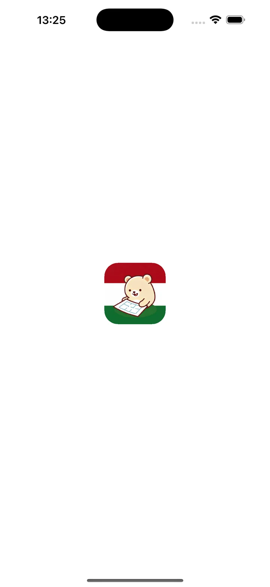
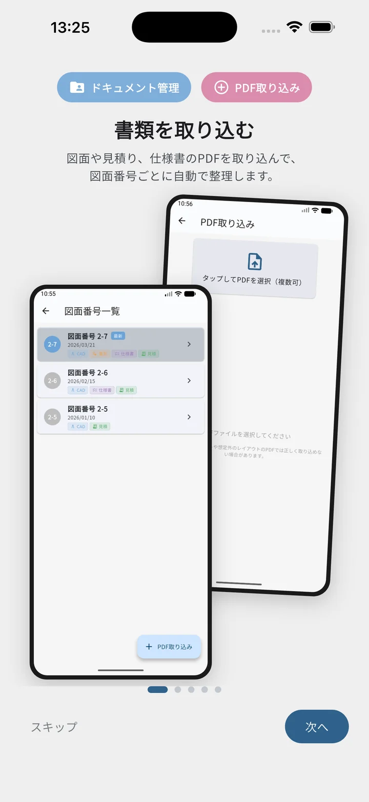
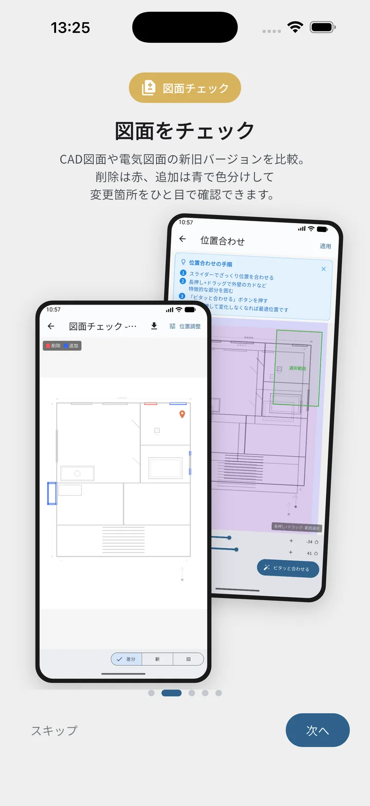
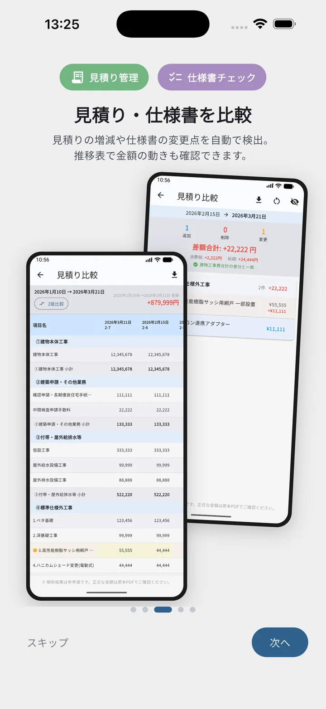
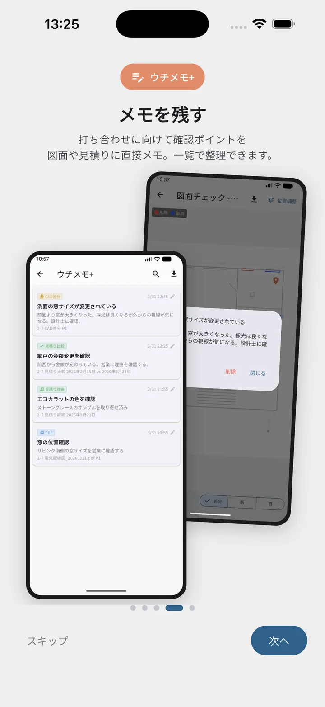
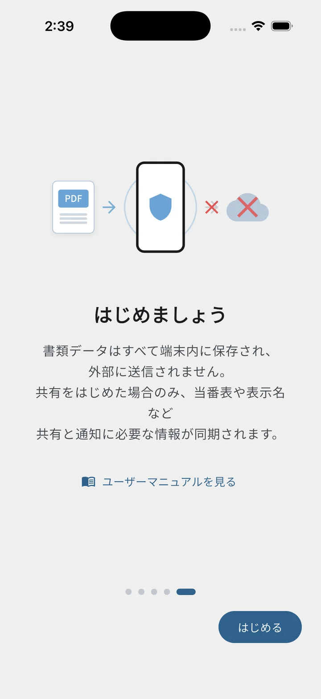
ホーム画面
アプリの起点となる画面です。カラフルなタイルで各機能にアクセスできます。

家づくりモード（10タイル）
打ち合わせ中の施主向け。5行×2列のグリッドで10個のタイルが並びます。タイル名をタップすると各機能の説明へジャンプします。
| 色 | タイル | 遷移先 |
|---|---|---|
| ● | ドキュメント管理 | 図面番号一覧 |
| ● | PDF取り込み | 取り込み画面 |
| ● | 見積り管理 | 見積り一覧 |
| ● | 図面チェック | 差分選択画面 |
| ● | 仕様書チェック β | 仕様書一覧 |
| ● | ウチメモ+ | メモ一覧 |
| ● | ブックマーク | ブックマーク一覧 |
| ● | スケジュール | スケジュール一覧 |
| ● | 便利ツール | ツール一覧 |
| ● | 設定 | 設定画面 |
暮らしモード（6タイル）
入居後のオーナー向けに、打ち合わせ系機能を隠した簡潔なレイアウト。
| 色 | タイル | 遷移先 |
|---|---|---|
| ● | でんき通信簿 | でんき通信簿 |
| ● | スケジュール | スケジュール一覧 |
| ● | ブックマーク | ブックマーク一覧 |
| ● | 便利ツール | ツール一覧 |
| ● | 家づくり記録 | 家づくり記録 |
| ● | 設定 | 設定画面 |
モード切替は 設定 → モード切替 から行います。
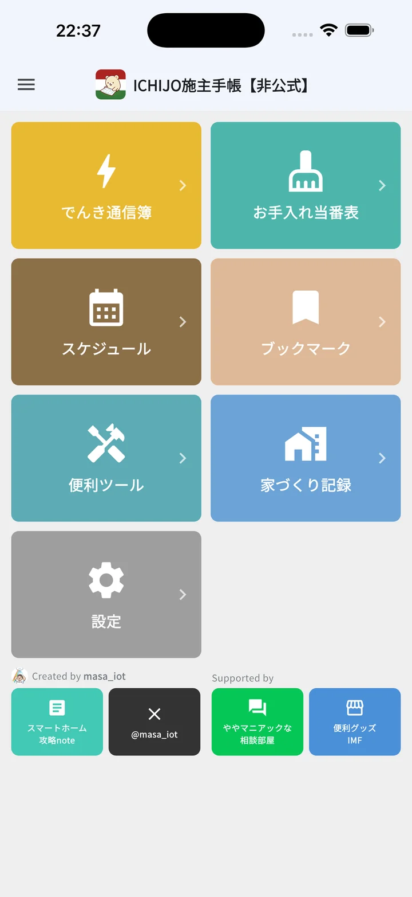
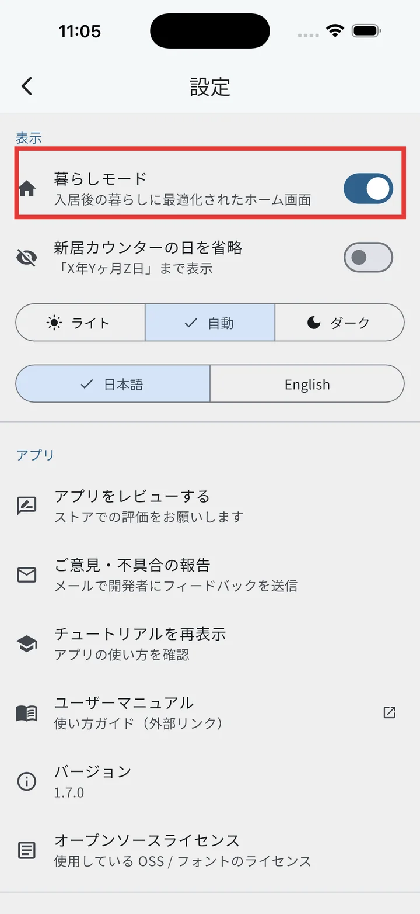
カウントダウン／カウンターカード（ホーム上部）
ホーム画面の上部には、状況に応じて2種類のカードが切り替わって表示されます。
- カウントダウン（予定日まで）：スケジュールでピン留めしたイベント、もしくはピン留めがない場合は次の未来イベントまでの日数（例：「引き渡しまで あと 42 日」）
- カウンター（経過表示）：引き渡し or 引っ越しをピン留めしておくと、予定日を過ぎたあとは自動で新居生活の経過表示（例：「新居生活 3年1ヶ月19日」）に切り替わります
- ピン留めの優先度：複数イベントがある場合、ピン留めしたものが最優先で表示されます。ピン留めなしのときは、日付順で最も近い未来イベントが選ばれます
- カードをタップするとスケジュール画面にジャンプします
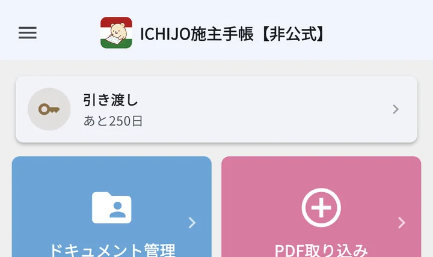
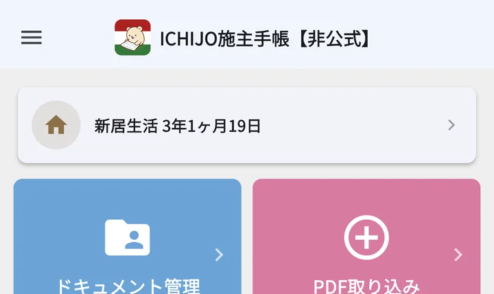
サイドメニュー（ドロワー）
画面上部のバーの左上の☰アイコンから開くサイドメニュー。現在のモードに応じた機能リストが表示されます。
- ヘッダー：アプリ名＋バージョン番号＋アイコン
- メニュー（家づくりモード時）：ドキュメント管理／PDF取り込み／見積り管理／図面チェック／仕様書チェック／ウチメモ+／ブックマーク／スケジュール／便利ツール／設定
- メニュー（暮らしモード時）：でんき通信簿／スケジュール／ブックマーク／便利ツール／家づくり記録／設定
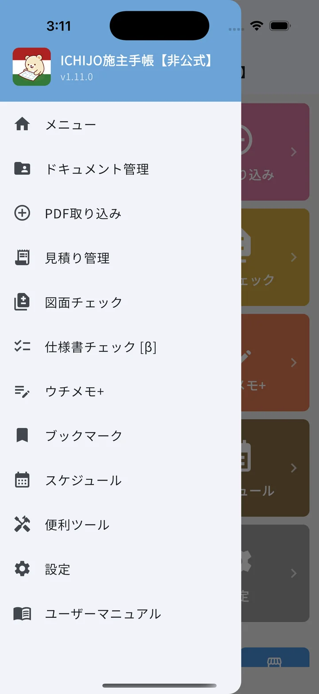
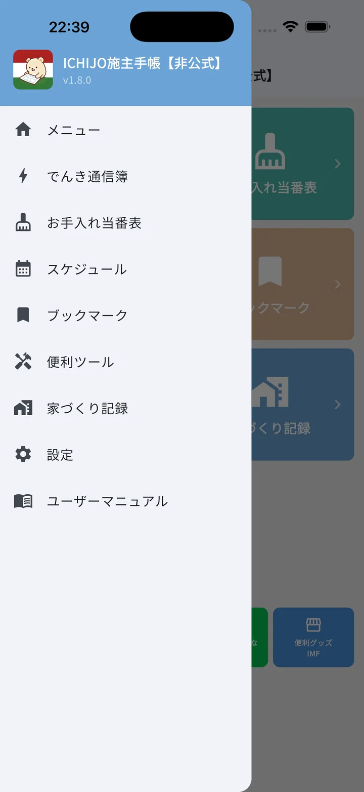
リンク集（ホーム下部）
タイルの下に、左右2グループのリンクカードが並びます。
- Created by masa_iot（左）：
- 🟢 スマートホーム攻略note（note.com/masa_iot）
- ⚫ @masa_iot（X / Twitter）
- Supported by（右）：
- 🟢 ややマニアックな相談部屋（LINEオープンチャット）
- 🔵 便利グッズ IMF（IMF のストア）
操作リファレンス
書類の取り込み
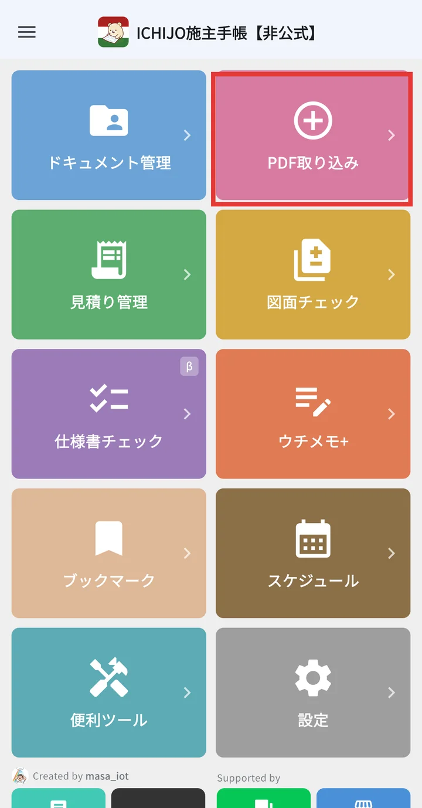
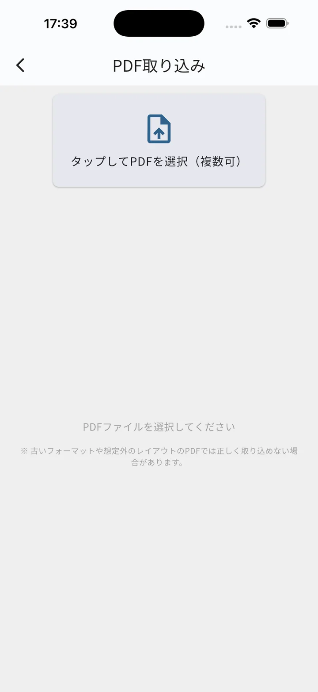
このアプリで最初にやるのは PDF の取り込み。取り込み方法には大きく 2 パターンあります。
- アプリから取りに行く：ホームの「PDF 取り込み」タイル → 端末内やクラウド（iCloud Drive / Google Drive / Dropbox 等）から PDF を選ぶ
- 外から送り込む：iサポや Files、Safari、PDF ビューアなど他のアプリから共有メニューや「このアプリで開く」で ICHIJO 施主手帳を選ぶ
どちらのルートでも、取り込むと自動で図面番号・種別を検出し、取り込み日時とあわせてドキュメントに整理します。
アプリから取りに行く（端末内・クラウド）
ホームの「PDF 取り込み」タイルから、端末内または iCloud・Google Drive・Dropbox などのクラウドにある PDF を複数まとめて選んで取り込むルートです。整理してまとめて入れたいときに便利。
- 「PDF取り込み」タイルをタップ
ホーム画面から起動します。
- 「ファイルから選択」をタップ
取り込み画面上部のボタン。
- PDF を複数選択
端末内やクラウドから、一度に何枚でも選べます。
- プレビューリストで確認
選択した PDF が一覧表示され、各ファイルに自動検出された図面番号・種別・日付が表示されます。
- 必要なら個別編集
検出が失敗した項目は、その場で手動修正できます。
- 「取り込み実行」をタップ
選んだ PDF をまとめて登録します。
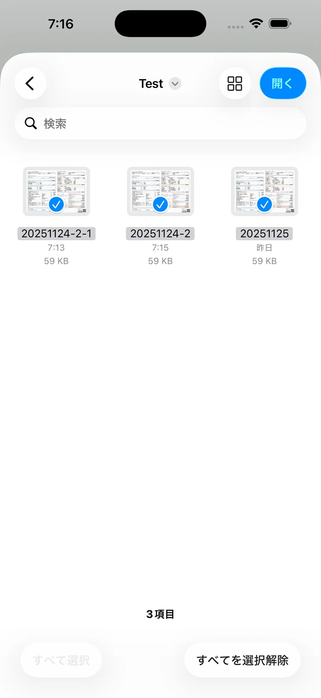

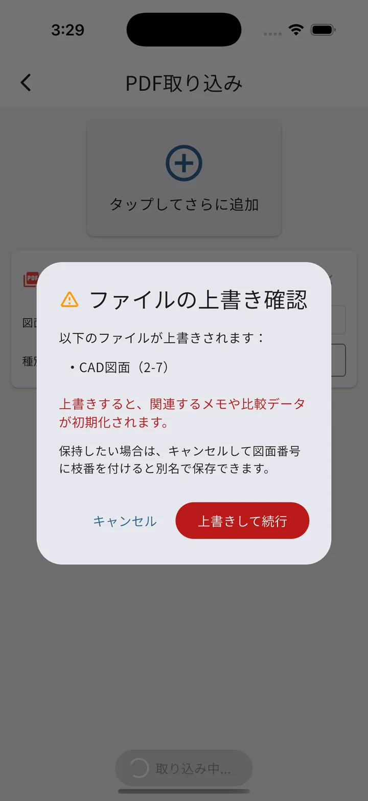
外から送り込む（他アプリ → ICHIJO 施主手帳）
iサポ、Files、Safari、各種 PDF ビューアなど、他のアプリで PDF を開いている状態から本アプリに送り込むルート。1 枚をその場ですぐ取り込みたいときに便利。
💡 まとめ取りも可能：送り込んだ後、すぐ「取り込み実行」を押さずに送り元アプリ（iサポ等）に戻り、別のPDFを同じように送り込むと、本アプリの取り込み画面のプレビューリストに次々と追加されていきます。一通り送り終わったら最後に「取り込み実行」を1回押せば、まとめて登録できます。
共有メニュー経由
- PDFを開く
iサポや Files、Safari、お使いの PDF ビューアなどで取り込みたい PDF を開きます。
- 共有メニューを開く
画面上部または下部の共有ボタン（四角に上向き矢印のアイコン）をタップして、共有先を選ぶメニューを呼び出します。
- 「ICHIJO 施主手帳」を選択
アプリ一覧から本アプリをタップ。
- 自動取り込み完了
アプリが起動（もしくはフォアグラウンドに戻り）、取り込みが自動で始まります。
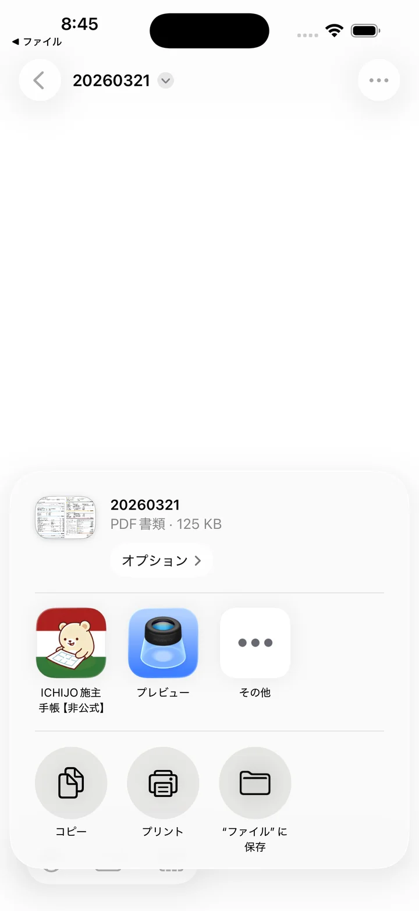
「このアプリで開く」経由
Files アプリなどで PDF を長押しするか、「どのアプリで開きますか？」リストが出た場合に、本アプリを選ぶルートです。ワンタップで取り込みが走ります。Android では iサポ アプリ内の PDF をタップするとそのまま「アプリで開く」シートが立ち上がり、ICHIJO 施主手帳【非公式】を選べます。
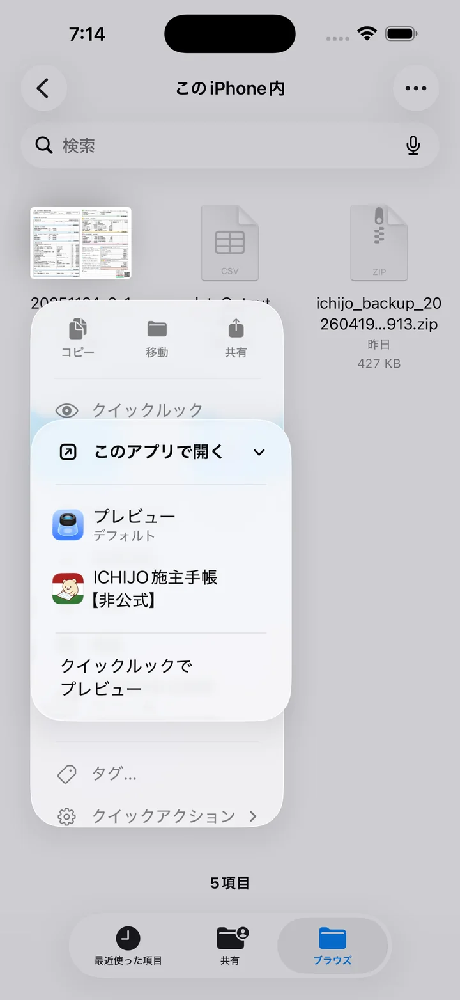
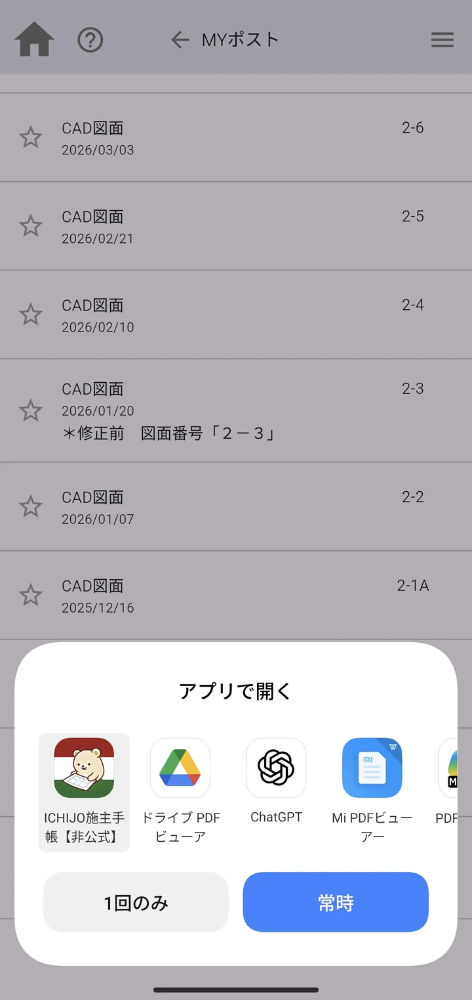
既定の PDF ビューアを別アプリ（Adobe、Acrobat 等）に設定している場合、この選択肢が出ないことがあります。その場合は共有メニュー経由をお使いください。
どちらのルートでも、取り込み時に端末内へ PDF のコピーが作られます。元の PDF はそのまま残るので、誤って削除する心配はありません。
取り込み後の修正
取り込み時に検出ミスがあっても、後から ファイル名・図面番号・種別 を修正できます。詳しい操作とエントリポイント（ファイル長押し / PDFビューア / 見積り詳細 / 仕様書詳細）は ドキュメント管理 → ファイル情報の編集 を参照してください。
重複チェック
同じPDFを2回取り込もうとすると、自動で重複検知されて「既に取り込み済み」の警告が出ます。バックアップから復元した直後など、同じPDFを再取り込みしようとしたときに便利です。
操作リファレンス
ドキュメント管理
取り込んだPDFを 図面番号単位でグループ化 して管理する機能です。
図面番号一覧
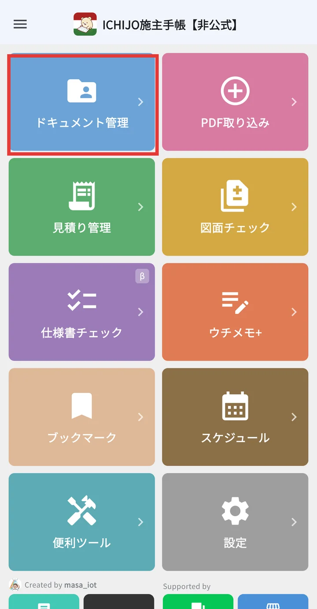

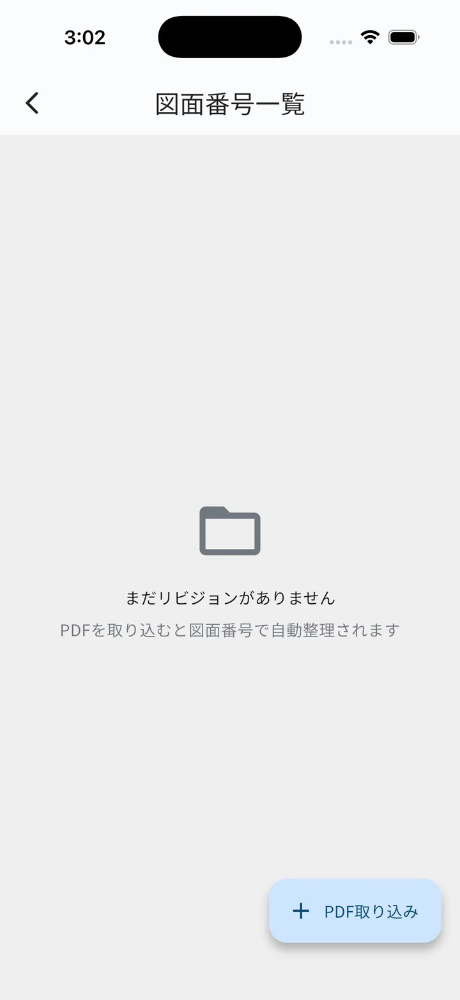
一覧カードに含まれる情報
- 図面番号（例：CAD-001）
- 最新バッジ：最新リビジョンのグループにつく
- 取り込み日時（PDFを取り込んだ時刻）
- サブリビジョン件数（例：「(3件)」枝番3つある場合）
- ファイル種別バッジ：CAD x2、電気 x1 など、含まれるファイル種別と件数
- 右端の › アイコン
空状態
取り込み前のアイコン＋「まだドキュメントがありません」＋取り込み画面への誘導ボタンが表示されます。
グループ詳細（複数枝番のとき）
同じ図面番号（例：CAD-001, CAD-001A, CAD-001B）が複数ある場合、一覧でグループをタップすると枝番を横断表示する グループ詳細画面 に遷移します。
2カラムのカラフルタイル表示
グループ内の全ファイルが、種別色付きのタイル（2カラムグリッド）として並びます。
- 中央に大きな種別アイコン（CAD / 電気 / 仕様書 / 見積り / その他）
- 種別ラベル
- 枝番（基本番号と違う場合のみ小バッジで表示）
- ファイル名
- 見積りの場合は通し番号（No.xxx）

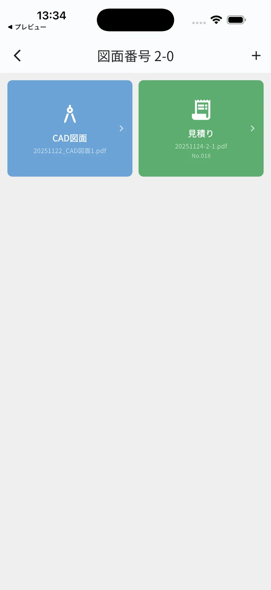
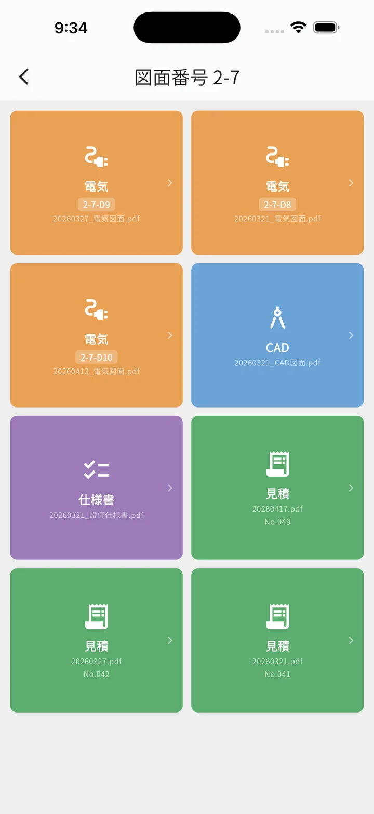
ファイルの長押しメニュー
グループ内のファイルを長押しすると、下からせり上がるメニューで操作を選べます。
- ファイル情報を編集 — ファイル名・図面番号・種別を修正するダイアログを開きます。詳細は ファイル情報の編集
- 削除（赤） — 確認ダイアログの後、ファイル単独で削除。空になったリビジョンは自動でクリーンアップされます。
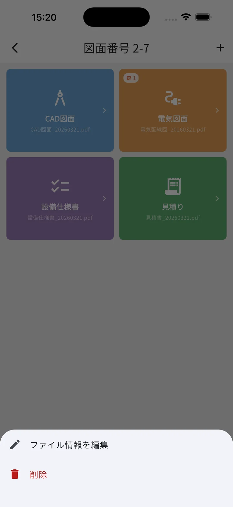
ファイル情報の編集
取り込み済みのファイルについて、以下の3項目を後から修正できます。
- ファイル名（一覧やメニューに表示される名前）
- 図面番号（グループの基準）
- 種別（CAD図面 / 電気図面 / 見積り / 設備仕様書 / その他）
編集を開く 4 つの場所
- ドキュメント管理 → グループ詳細 → ファイル長押し → 「ファイル情報を編集」
- PDFビューア：画面上部のバーの ✏️ アイコン
- 見積り詳細画面：画面上部のバーの ✏️ アイコン
- 設備仕様書詳細画面：画面上部のバーの ✏️ アイコン
どの入口から開いても、同じダイアログが表示されます。
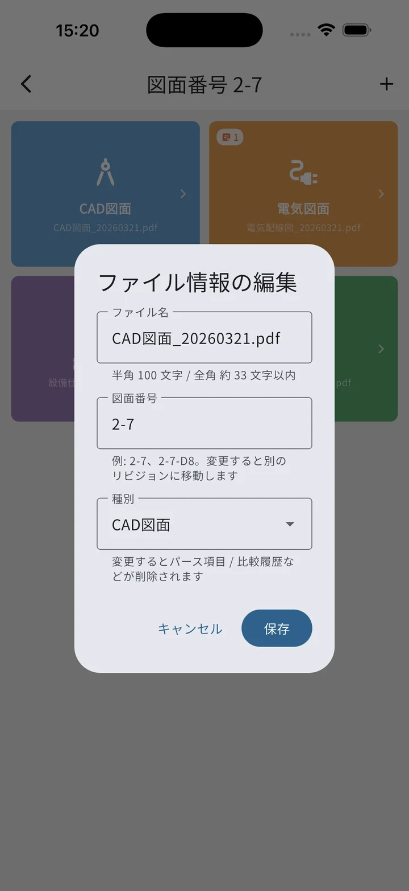
変更したときの挙動
| 変更内容 | 保存後の動き |
|---|---|
| ファイル名のみ | 即時反映、画面はそのまま。「ファイル情報を更新しました」と画面下部に通知が出ます。 |
| 図面番号 | PDFが新しい図面番号グループに移動します。詳細画面（PDFビューア / 見積り詳細 / 仕様書詳細）から開いた場合は自動で一覧に戻ります（開いていたファイルが別グループに振り替わるため）。 |
| 種別 | 保存先フォルダが新しい種別に変わります。見積り詳細・仕様書詳細から開いた場合は自動で戻ります（詳細画面のコンテキストが変わるため）。 |
図面番号と種別の同時変更はできません。 両方変更したい場合は、まず片方を保存→もう一度ダイアログを開いてもう片方を保存、という二段階で行ってください。同時に変更しようとした場合は両フィールドが赤く表示され、「種別と図面番号は同時に変更できません」とエラーが出ます。
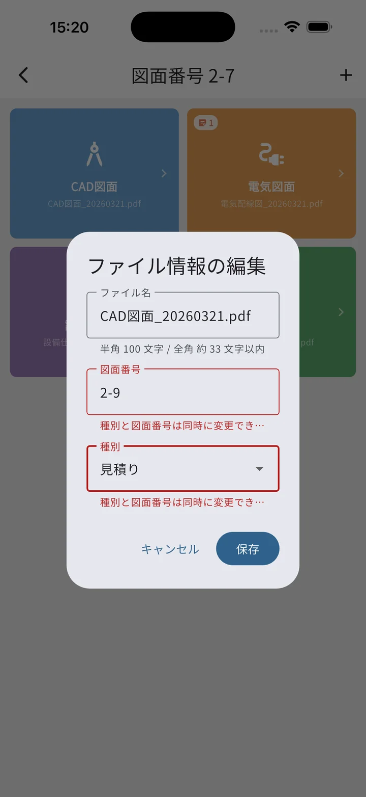
図面番号を変更するときの確認
変更しようとしているファイルが、すでに 2版比較・単独解析などで他のファイルと参照関係を持っている場合に限り、変更前に確認ダイアログが出ます。新しい図面番号グループへ持っていけない参照を整理するためです。
- {種別}の比較履歴 / 単独解析
- その比較・単独解析に紐づくメモ・ブックマーク
- 見積りの場合は「マッチング修正」
これらは変更時に削除されます。ファイル本体・パース項目・このファイル単体に付けたメモ／ブックマークはそのまま保持されます。比較や単独解析を一度もしていないファイルでは、確認ダイアログは出ず即時反映されます。
変更先の図面番号で同名ファイルが既に存在する等、衝突が発生する場合は別エラー「図面番号を変更できません」が表示されて中断します。
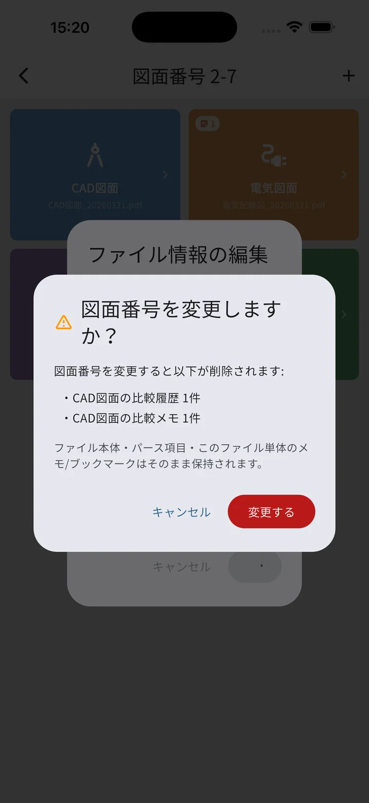
種別を変更するときの確認
種別変更でも、参照関係（比較履歴・詳細画面メモ／ブックマーク等）がある場合は同様の確認が出ます。さらに、見積り・設備仕様書から別の種別へ変更する場合は、パース項目が必ず削除されるため、件数によらず必ず確認ダイアログが表示されます。
新しい種別が見積り／設備仕様書で、その PDF を解析できなかった場合は「このPDFは{種別}として認識できませんでした」と画面下部に通知が出て中断します。同名ファイルが既にある場合は別エラーで中断します。
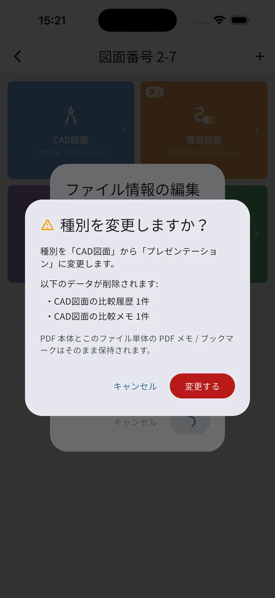
確認ダイアログで キャンセルを選んだ場合、データには一切書き込まれません（ファイル名だけ先に保存されることもありません）。
入力できる文字
- ファイル名：100 バイト以内（日本語約 33 文字、ASCII 約 100 文字）。
/\、単独の..、制御文字は使えません。 - 図面番号：50 バイト以内。
/\、単独の..、制御文字は使えません。
削除操作のまとめ
| 操作 | 対象 | 確認ダイアログ |
|---|---|---|
| 図面番号カード長押し | グループ全体 | 「図面番号 2-7 を削除 / この図面番号に含まれる 3 件のリビジョンと全ファイルを削除します。削除してよいですか？」のように表示 |
| グループ詳細のタイル長押し → 削除 | ファイル単独 | 「CAD図面を削除 / 「CAD図面_20260321.pdf」を削除してよいですか？」のように、種別とファイル名を添えて表示 |
削除は元に戻せません。 バックアップZipから復元する場合も、削除時点のバックアップがないと取り戻せません。大事なデータの操作前にはバックアップを取ることをお勧めします。
ファイル削除後に、リビジョン内のファイルがすべて無くなった場合は、そのリビジョン自体も自動で整理されます（孤立行は残りません）。
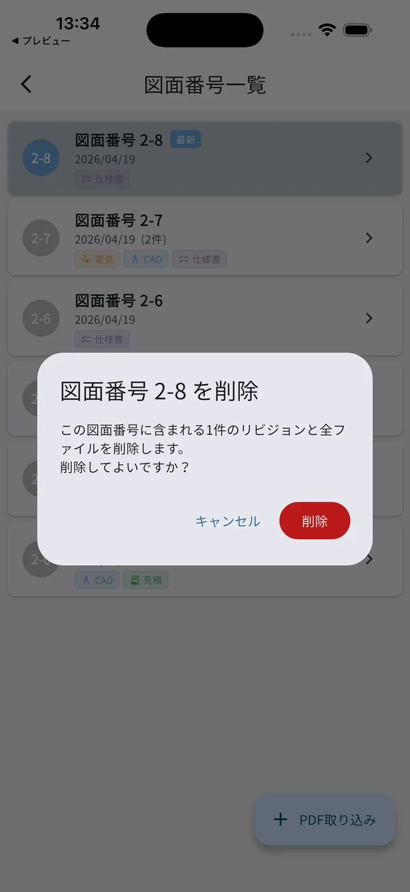
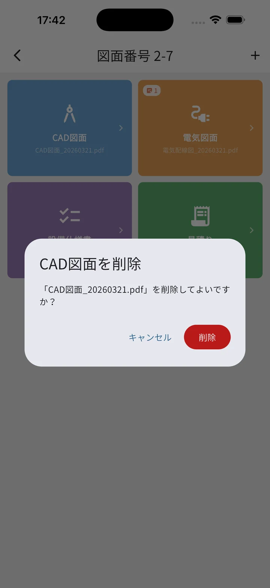
PDFビューア
ファイルタップで開くPDF閲覧画面です。iOSでは図面系のページ回転に対応、Androidおよび見積り/仕様書はテキスト表示の安定性を優先したビューアで開きます。
画面要素
- 画面上部のタイトル：現在のページ番号と総ページ数（例：「3 / 12 ページ」）
- 画面上部の右上アクション：
- ✏️ 編集：このファイルの情報（ファイル名・図面番号・種別）を編集（詳細は ファイル情報の編集）
- 🔖 ブックマーク：このPDFをブックマーク登録／解除（トグル）
- 📝 ページメモバッジ：このページにメモが1件以上あるときのみ表示。タップで当該ページのメモ一覧
- 画面右下の丸ボタン（オレンジ）：現在ページへのメモを追加
- メインエリア：PDFページ（ピンチズーム・スワイプ切替）
操作
- 左右スワイプ：ページ送り
- ピンチズーム：拡大縮小
- 右下の丸ボタンのタップ：現在ページにメモを追加
- ブックマークアイコン：登録／解除トグル
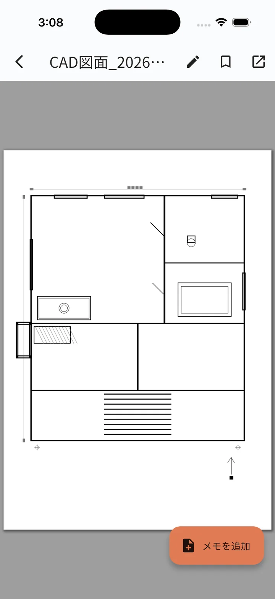
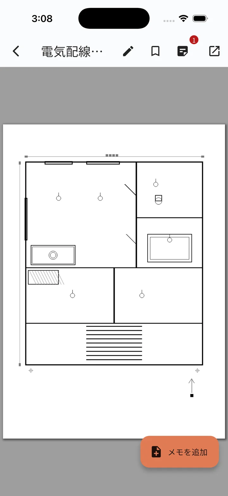
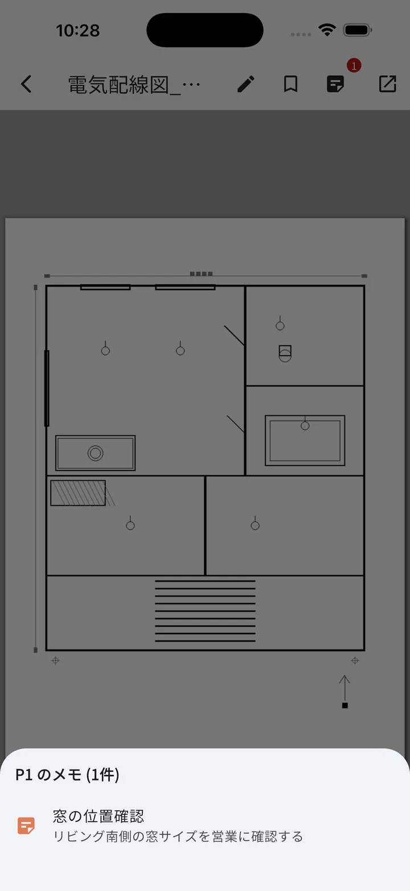
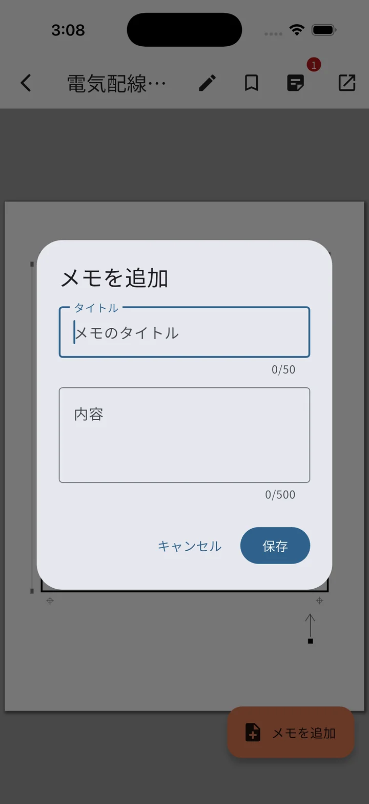
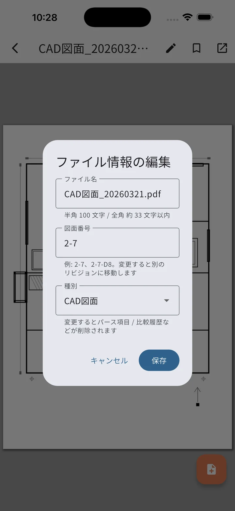
操作リファレンス
図面チェック（CAD差分）
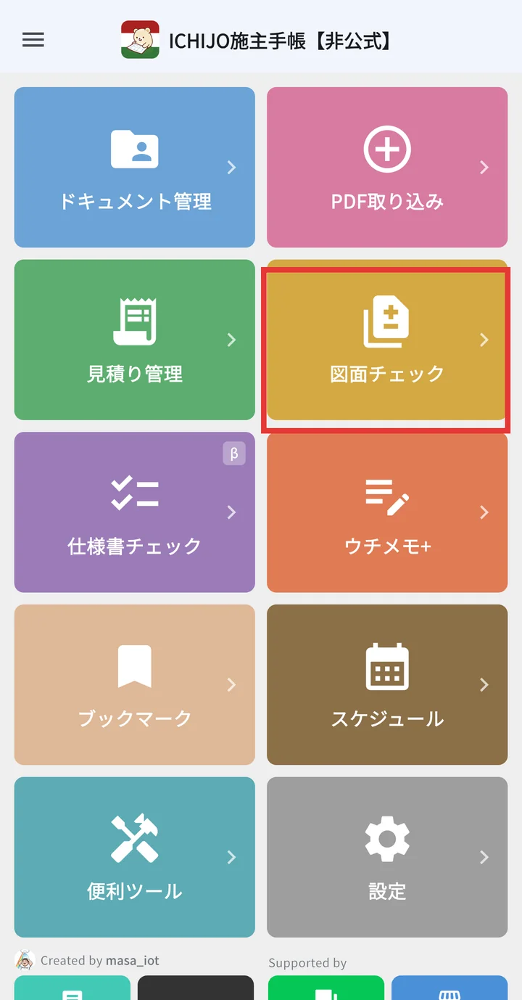

CAD図面・電気図面の2バージョンを重ね合わせて、変更箇所を色分け表示する機能です。単独モードで1枚を高画質で開く用途にも使えます。
画面の基本構成
- 画面上部のバー：タイトル「図面チェック」
- 種別セグメント：CAD図面 ／ 電気図面
- 単独図面解析トグル：差分ではなく1枚を高画質で開くモードへ切替
- バージョンセレクター：旧／新の2つのプルダウン（単独モード時は1つ）
- アクションボタン：「比較する」または「表示する」（単独モード時）
- 比較履歴リスト：過去の比較実績を新しい順に表示
種別セグメントを切り替えると、対応するリビジョンだけがプルダウンの選択肢になります。
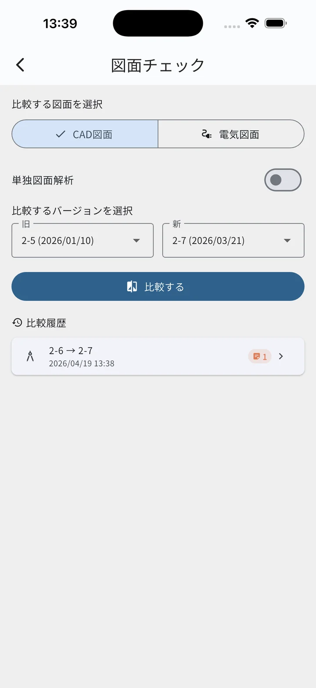
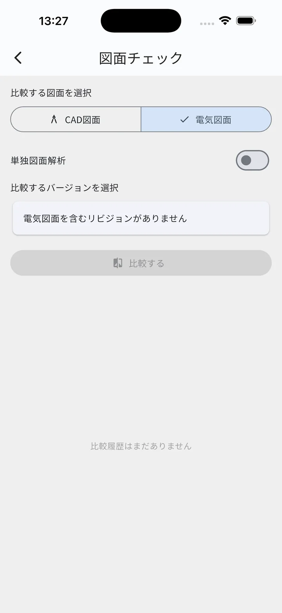
比較履歴
選択画面の下部に、過去の比較結果が新しい順に並びます。タップすると前回の状態（フィルタレベルや手動調整値）を保ったまま、すぐに再表示されます。
- 種別アイコン（CAD／電気／単独図面）
- 図面番号（旧 → 新、または「(単独)」）
- 実行日時
- メモバッジ（この比較に紐づくメモ件数。0件のときは非表示）
操作
- タップ：比較結果を即表示（手動調整値もそのまま復元）
- 長押し：履歴削除の確認ダイアログ
位置合わせの調整値はページ単位で保存されるため、後日同じ組み合わせで開いても再調整は不要です。
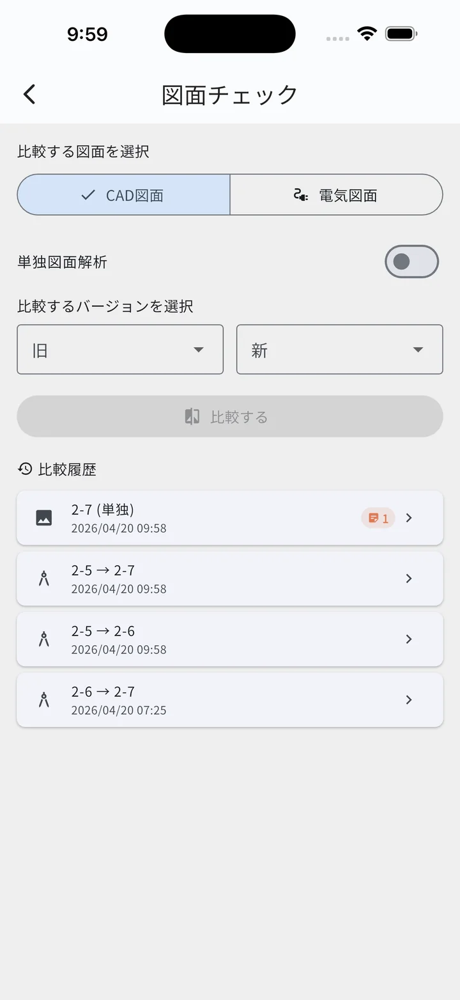
単独図面解析モード
差分比較ではなく、1 つの図面を高画質に変換して開くモードです。画面上にピンメモを残せるほか、エクスポート機能で高画質画像として保存・共有もできます。
こんなときに便利：間取りチェックを家族や知り合いに相談したいとき、PDFビューアの単純なスクショだとどうしても画質が荒くて細かい部分が読み取れません。このモードで開いてエクスポートすれば、シャープに描画された図面をそのまま画像で渡せます。
- 選択画面の単独図面解析トグルをONにすると、バージョン選択が1つに変わります
- 「表示する」ボタンで該当ファイルを高画質変換して開きます
- 画面構成は差分結果画面とほぼ同じですが、差分／新／旧の切替は無効
- 右上のエクスポートから、現在ページ単体 or 全ページまとめての保存／共有が可能
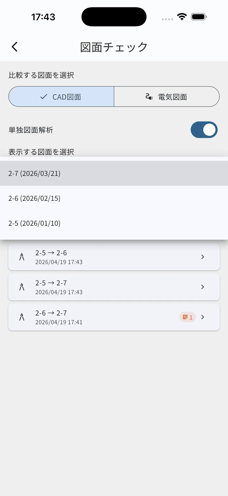
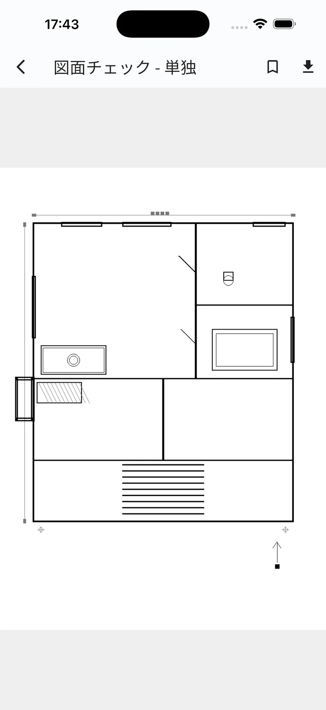
差分結果画面
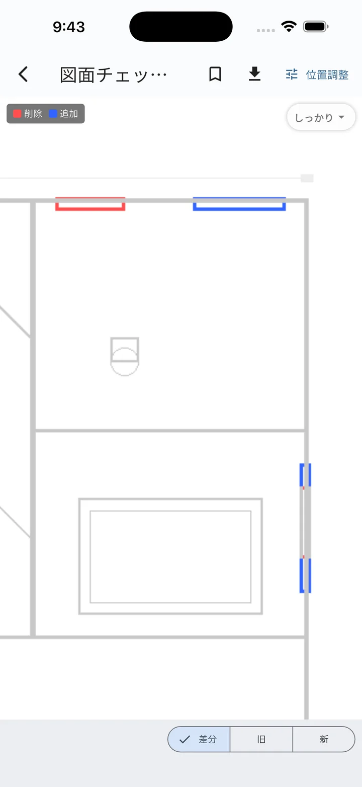

自動計算の流れ
- PDFを高精細な画像に変換
- 旧版と新版を自動で位置合わせ（ずれた図面を重ね合わせられる状態に）
- 差分を検出
- 色分け表示：赤=削除／青=追加／薄グレー=変化なし
計算中は進捗バーが表示されます。同じ版の組み合わせを再度開いたときは前回の結果がそのまま表示されます。
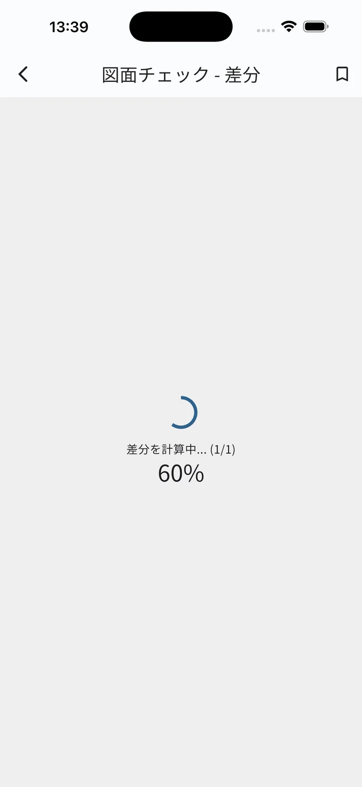
画面上部のバー
- タイトル：図面番号の旧→新（例：2-6 → 2-7）、単独モード時はファイル名
- メモアイコン：このページのメモ一覧
- 🔖 ブックマーク：この比較結果を登録／解除
- 位置合わせ（手動調整）アイコン：位置合わせ画面へ
- エクスポートアイコン：画像保存／共有
ビューモード切替（画面下部）
画面下のバーにセグメント切替で3つのビューモードが並びます。
- 差分：赤青の差分画像（デフォルト）
- 旧：旧バージョンの原画像
- 新：新バージョンの原画像
単独モード時はこのセグメントは非表示です。
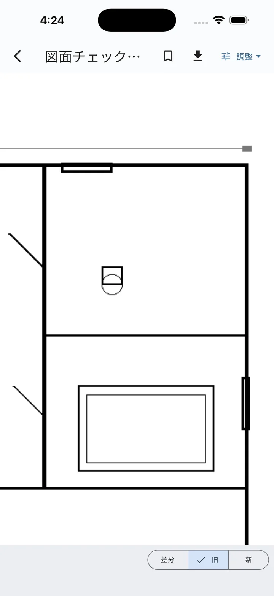
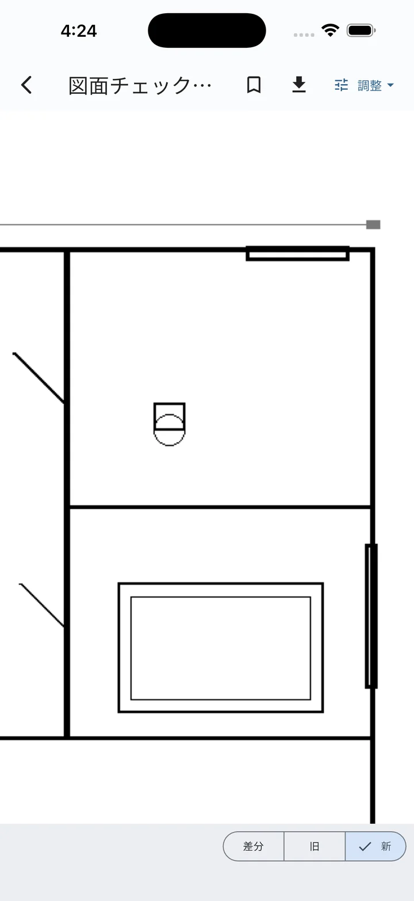
ノイズ除去フィルタ
スキャンノイズや1pxの細かいズレで不要な差分が大量に出る場合、右上のドロップダウンから4段階のフィルタを選べます。
| レベル | 効果 |
|---|---|
| しっかり（デフォルト） | フィルタなし、全差分を表示 |
| ややざっくり | 1pxノイズ除去 |
| ざっくり | 小さな塊を除去 |
| 超ざっくり | 目立つ変更のみ表示 |
フィルタレベルは ページ別 に保存されます。1ページ目は「しっかり」、2ページ目は「ざっくり」のような使い分けが可能。レベル変更時は再計算が走ります。
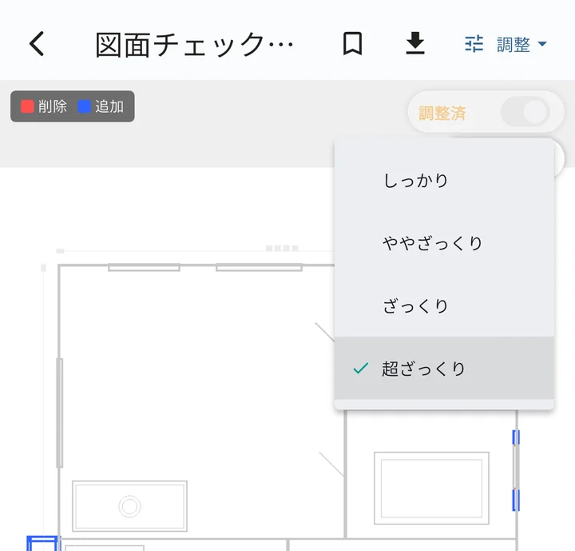
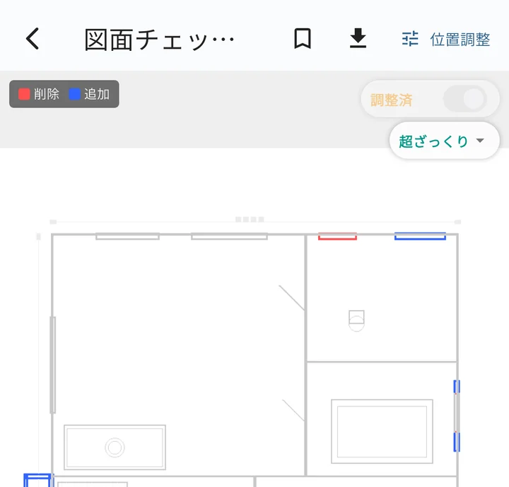
調整済 / 元の差分 切替
手動で位置合わせを行ったページでは、画面右上に「調整済 / 元の差分」の切替スイッチが表示されます。調整結果を適用した差分と、自動位置合わせ時の差分を比較できます。
※フィルタレベルが「しっかり」以外の場合、このスイッチは無効になります（常に調整済を表示）。
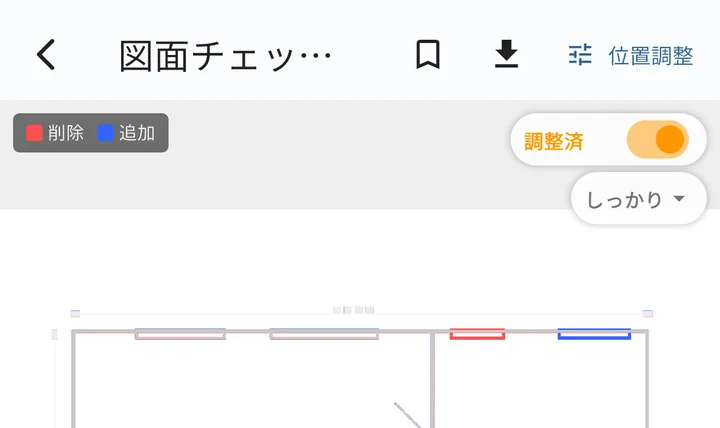
複数ページ操作（画面下のバー）
PDFが複数ページある場合、画面下にページナビが表示されます。
- ← / → でページ送り
- 中央に「現在ページ / 総ページ数」
- ページを送るごとにズームは初期化
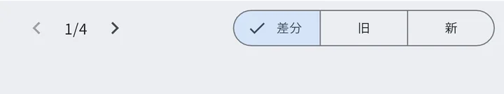
ズーム・パン・スクロール
- ピンチアウト：最大8倍まで拡大
- ピンチイン：縮小（等倍が最小）
- ドラッグ：パン（拡大中のみ）
- ダブルタップ：ズームイン／リセット
画像エクスポート
画面上部の右上のエクスポートアイコンをタップすると、下からせり上がるメニューで2つの選択肢が出ます。
- 現在の画像を保存／共有：いま見ている1枚だけ（表示中のビューモードとページ番号が自動で反映されます）
- 現在ページの3枚をまとめて共有（差分・新・旧）：同じページの3モードを一気に
保存されるPNGのファイル名には、図面番号とページ番号が自動で入ります（例：2-7_P1.png）。
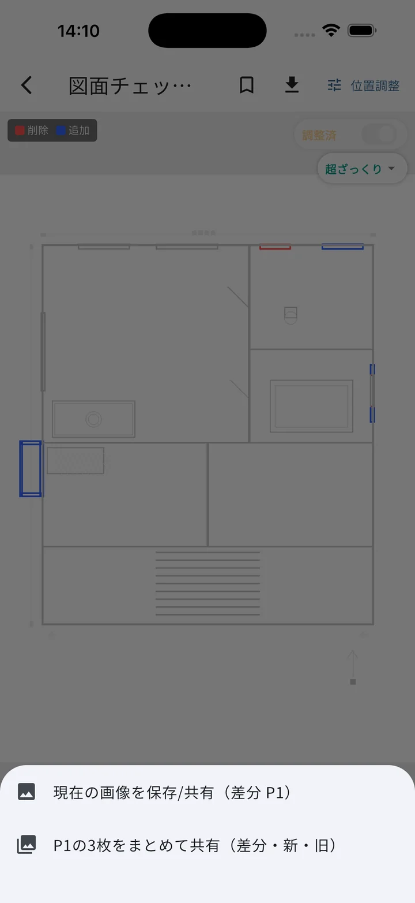
画面長押しでピンメモ
差分結果画面の気になる位置を長押しすると、その座標にピンが立ち、メモを残せます。詳細は ウチメモ+ ＞ CAD差分画面のピンメモ を参照。
位置合わせ画面
差分結果でズレが大きいときに、手動で旧図の位置を調整する画面です。差分結果の画面上部のボタンから遷移します。
画面上部のヘルプバナーに、以下の3ステップが表示されます。
- X/Yスライダーでざっくり位置を合わせる
- 選択枠（緑の枠）を外壁のカドなど特徴的な部分に移動・リサイズ
- 「ピタッと合わせる」ボタンで自動探索を実行（変化なしになるまで数回繰り返す）

操作方法
- X / Y スライダー（画面下）：旧図全体の位置を上下左右に微調整
- 選択枠（緑）のドラッグ：枠を画面内で移動
- 選択枠の四隅ハンドル：枠サイズをリサイズ
- 「ピタッと合わせる」（右下）：選択枠の領域内で最適位置を自動探索
- 「枠を初期位置に」（左下）：選択枠を初期サイズ・位置にリセット
- 右上「適用」：現在の調整値を保存し、差分を再計算して結果画面へ戻る
調整した結果は ページ単位 で保存されます。ほかのページには影響しません。
操作リファレンス
見積り管理
画面の基本構成
- 画面上部のバー：タイトル「見積り管理」のみ
- アクションバー（バー直下、両タブ共通）：「2版比較」「推移表」の2ボタン
- タブ：「一覧」／「比較履歴」
- 一覧タブ：取り込んだ全見積りPDFを図面番号降順で表示（同番号なら通し番号→見積作成日の順で並び替え）
- 比較履歴タブ：過去に「2版比較」を実行したペアの履歴

一覧カードの情報
- 通し番号（No.xxx）— PDFから自動抽出される連番（編集不可）
- 発行日
- 総額（税込）
- 最新バッジ — 同じ枝で最も新しい版に付与
- 検算ステータス（⚠️ バッジは金額の整合にズレがある場合のみ表示）
操作
- カードタップ：見積り詳細画面へ
- カード長押し：削除確認ダイアログ
- 比較ボタン（画面上部）：2版選択 → 比較画面
見積り詳細画面

項目ツリー
見積りPDFを取り込むと、以下の 8つの費用区分 に自動で分類されてツリー表示されます（①〜⑧の番号は一条工務店の見積書フォーマットに対応）。
- ①建物本体工事
- ②建築申請・その他業務
- ③付帯・屋外給排水等
- ④標準仕様外工事
- ⑤太陽光・蓄電池
- ⑥土地購入費用
- ⑦その他費用
- ⑧預り金精算費用
各区分内には、項目の単価・数量・金額に加えて、小計や特別割引（例：建物本体工事内の「法人契約特別割引」「ご紹介割引」等）も含めて表示します。
自動検算（整合性チェック）
取り込み時に、読み取った各項目を合計して見積書の小計・合計と突き合わせる検算が走ります。ズレがある区分にはカード上に ⚠️ アイコンが付き、詳細画面でもズレ金額が赤字で併記されます。検算が通らない代表ケース：
- 想定外のフォーマット（新フォーマット、法人契約の特別割引行 等）で読み取りに失敗
- 手書き／スキャン取り込みのPDF
- 一部項目の単価×数量の端数処理ズレ
⚠️ が出ていても、推移表や2版比較のソートには影響しません。
項目の長押し
任意の項目を長押しすると、その項目に対するメモのダイアログが開きます。
- その項目にメモが無い場合：新規メモ追加ダイアログ
- その項目にメモがすでにある場合：メモ詳細ダイアログ（編集・削除可能）

画面上部のバー
- タイトル：「{見積作成日} (No.{通し番号})」を表示（例：「2026年4月17日 (No.049)」）
- ✏️ 編集：この見積りのファイル情報（ファイル名・図面番号・種別）を編集（詳細は ファイル情報の編集）
- 🔖 ブックマーク：この見積り詳細をブックマーク登録／解除
- ⬇️ CSV出力：項目一覧を CSV ファイルで保存／共有（Excel互換）
- 「PDF」ボタン：取り込み元のPDFをビューアで開く
2版比較

画面上部のバー
- タイトル：「見積り比較」
- 🔖 ブックマーク：この比較結果をブックマーク登録／解除
- ⬇️ CSV出力：項目ごとの旧・新・差額を CSV で保存／共有（Excel互換）
- 🔄 マッチングをリセット：手動で修正した対応付けをすべて削除して自動マッチングに戻す（確認あり）
- 👁️ ／ 👁️🗨️ 表示切替：「変更のみ表示」と「全項目表示」をトグル
画面構成
- サマリー帯：旧版日付 → 新版日付／追加・削除・変更・変更なしの件数バッジ／差額合計／消費税・総額の差分／建物工事費合計のチェック
- メインエリア：費用区分ごとに、項目の旧金額・新金額・差額をリスト表示
- 色分け：追加 青／削除 赤／金額変更 オレンジ／変更なし グレー
項目の長押し
差額の大きい項目や気になる項目を長押しすると、その項目に紐づくメモを追加できます。
表示フィルタ（画面上部の目アイコン）
初期状態は「変更ありのみ表示」（目に斜線のアイコン）。アイコンをタップすると「全項目表示」（目アイコン）に切り替わり、変更なしの行も含めて全部表示されます。
マッチング修正（項目の対応付けを手動調整）
2版比較は、項目名や金額をもとに旧版・新版の項目を自動で対応付けますが、項目名が大きく変わった場合などは「実は同じ項目」を別物として扱ってしまうことがあります。そんなときは、項目の行をタップすると下から「マッチング修正」シートが立ち上がります。
- 「新規追加として扱う」：旧バージョンに対応する項目がないと宣言（追加扱い）
- 旧バージョンの項目から選択：旧版の任意の項目と対応付け直し（既存マッチがある旧項目を選ぶと、その項目のマッチが解除される旨が注記されます）
修正した対応付けは保存され、次回同じ2版を開いても維持されます。画面上部のバーの 🔄 「マッチングをリセット」 アイコンで、手動修正をすべて削除して自動マッチングに戻せます。
推移表

3バージョン以上の見積りがある場合に真価を発揮する画面です。
特徴
- 左列：項目名（固定）
- 右側：全バージョン横並び（横スクロール）
- セル色で変動を可視化（増加：赤系／減少：青系）
- ヘッダー：各バージョンの通し番号・日付
比較履歴タブ
過去に実行した2版比較の履歴が新しい順に並びます。
- タップで再表示
- 長押しで履歴削除
本アプリは一条工務店のPDFフォーマットを想定して解析しています。想定外のフォーマットの場合、解析結果にズレが出ることがあります。気になる点があればお問い合わせください。
操作リファレンス
仕様書チェック（β）
設備仕様書PDFを取り込んで、セクション別の階層表示＋2版比較する機能です。現在β版として提供しています。
画面の基本構成
- 画面上部のバー：タイトル「仕様書チェック [β]」のみ
- アクションバー（バー直下、両タブ共通）：「2版比較」ボタン
- タブ：「一覧」／「比較履歴」
- 一覧タブ：取り込んだ全仕様書PDFを図面番号降順で表示
- 比較履歴タブ：過去に「2版比較」を実行したペアの履歴
一覧カードの情報
- 図面番号（丸アイコン）
- ファイル名（例：設備仕様書_20260321）
- 仕様書No（PDFから自動抽出）
- 最新バッジ — 同じ図面番号で最も新しい版に付与
操作
- カードタップ：仕様書詳細画面へ
- カード長押し：削除確認ダイアログ
- 比較ボタン（画面上部）：2版選択 → 比較画面
仕様書詳細画面
自動構造化（8セクション）
設備仕様書PDFを、以下の8セクションに自動分類します。これは一条工務店の「設備仕様書」PDFに含まれる表の見出しに対応しています。
- 外部仕上表：屋根・外壁・外構まわり
- 内部仕上表：床・壁・天井の仕上げ
- 設備仕上表：キッチン・浴室・給湯・衛生設備
- エアコン仕上表：エアコン・換気まわり（指示No付き）
- 収納仕上表：収納・クローゼット
- 内装仕上表：カーテン・クロス等の内装
- 設定外工事：標準外の特別工事
- 施工連絡表一覧：現場への指示事項
各セクションはカードで区切られ、内部は表形式に整形して表示されます。セクションタイトルをタップすると展開／折りたたみできます。
項目の長押し
任意の項目を長押しすると、その項目に対するメモのダイアログが開きます。
- その項目にメモが無い場合：新規メモ追加ダイアログ
- その項目にメモがすでにある場合：メモ詳細ダイアログ（編集・削除可能）
画面上部のバー
- タイトル：「{図面番号} (仕様書No.{番号})」を表示（例：「2-7 (仕様書No.1)」）
- ✏️ 編集：この仕様書のファイル情報（ファイル名・図面番号・種別）を編集（詳細は ファイル情報の編集）
- 🔖 ブックマーク：この仕様書詳細をブックマーク登録／解除
- ⬇️ CSV出力：項目一覧を CSV ファイルで保存／共有（Excel互換）
- 📄 PDFアイコン：取り込み元のPDFをビューアで開く
2版比較
画面上部のバー
- タイトル：「仕様書比較」
- 🔖 ブックマーク：この比較結果をブックマーク登録／解除
- ⬇️ CSV出力：項目ごとの旧・新の差分を CSV で保存／共有（Excel互換）
画面構成
- サマリー帯：旧版 → 新版／追加・削除・変更・変更なしの件数バッジ
- メインエリア：セクションごとに項目を並べ、旧値・新値を併記
- 色分け：追加 青／削除 赤／変更あり オレンジ（旧→新の値を併記）／変更なし グレー
項目の長押し
差分のある項目や気になる項目を長押しすると、その項目に紐づくメモを追加できます。
表示フィルタ（「変更なし」チップ）
初期状態は「変更ありのみ表示」。サマリー帯の下にある「変更なし」チップをタップすると、変更なしの項目も含めて全部表示されます。
比較履歴タブ
過去に実行した2版比較の履歴が新しい順に並びます。
- タップで再表示
- 長押しで履歴削除
本アプリは一条工務店のPDFフォーマットを想定して解析しています。想定外のフォーマットの場合、解析結果にズレが出ることがあります。気になる点があればお問い合わせください。
操作リファレンス
ウチメモ+

画面上で気づいたことを その場で残せる 仕組みです。メモはすべて元の画面・位置にリンクされ、一覧からワンタップで戻れます。
メモの記録方法
メモを残せる画面は以下の4箇所。一覧ではメモの種別ごとにフィルタできます。
| 記録場所 | 操作 | 内部種別 |
|---|---|---|
| PDFビューア | 画面右下のオレンジ色の丸ボタンをタップ → 現在ページへ記録 | |
| CAD差分画面 | 画面上の気になる位置を 長押し（ピンメモ） | 図面差分 |
| 見積り詳細 | 項目を 長押し → メモ追加 | 見積り詳細 |
| 見積り2版比較 | 項目を 長押し → メモ追加 | 見積り比較 |
| 仕様書詳細 | 項目を 長押し → メモ追加 | 仕様書詳細 |
| 仕様書2版比較 | 項目を 長押し → メモ追加 | 仕様書比較 |
PDF閲覧中のメモ
- PDFを開く
- 画面右下のオレンジ色の丸ボタンをタップ
現在表示中のページへメモを追加するダイアログが表示されます。
- テキストを入力して保存
- 登録後は画面上部にページメモバッジが表示
同じページに複数メモが溜まると件数バッジで表示、タップで一覧に遷移できます。
CAD差分画面のピンメモ
- 差分画面で気になる位置を長押し
長押しした座標にピンが立ち、メモダイアログが開きます。
- テキストを入力して保存
画面上にピンアイコンが残り、タップで再表示できます。
ピンメモはズーム・パンと連動します。拡大した状態で細かい位置に打っても、拡大縮小・パンしても同じ位置に追従します。
見積り項目メモ
見積り詳細の任意の項目を長押し → 「メモ追加」。

仕様書項目メモ
仕様書詳細の項目を長押し → 「メモ追加」。

メモ一覧画面

カード情報
- 種別バッジ（PDF／図面差分／見積り詳細／見積り比較／仕様書詳細／仕様書比較）
- 紐づく対象（図面番号・ページ番号・項目名 など）
- メモ本文の先頭
- 作成日時
フィルタと検索
画面上部の右上からフィルタ＆検索が開けます。
- 種別フィルタ：すべて／PDF／図面差分／見積り詳細／見積り比較／仕様書詳細／仕様書比較
- 図面番号フィルタ：特定の図面番号に紐づくメモのみ表示
- キーワード検索：メモ本文を全文検索
元画面へのジャンプ
メモカードをタップすると、メモを残した元の画面にそのまま戻れます。図面差分ならそのピン位置で、見積りならその項目で。
CSVエクスポート
画面上部の右上のエクスポートアイコンから、フィルタ適用後のメモ一覧を CSV で書き出せます。Excel でそのまま開けます。
メモ編集・削除
- メモ一覧のカードタップ：元画面へジャンプ
- メモ一覧のカード長押し：削除確認ダイアログ
- 元画面側で再度長押し → 編集／削除の選択メニュー
操作リファレンス
ブックマーク
よく見る画面を ワンタップでアクセス できるようにする機能です。打ち合わせ直前に「今日触りたい書類」を並べておくと便利。
登録できる6種類
| 種別 | 登録元画面 |
|---|---|
| PDFファイル | PDFビューア |
| 図面差分 | CAD差分結果画面 |
| 見積り詳細 | 見積り詳細画面 |
| 見積り比較 | 見積り2版比較画面 |
| 仕様書詳細 | 仕様書詳細画面 |
| 仕様書比較 | 仕様書2版比較画面 |
登録・解除は、対応画面の画面上部の右上にあるブックマークアイコン（🔖）をタップ。もう一度タップで解除できます。
ブックマーク一覧画面
- 新しい順で表示
- 種別バッジ（色分け）
- ラベル（自動生成）
- サブラベル（該当する場合）
- 登録日時（M/D HH:MM）
空状態
アイコン＋「まだブックマークがありません」＋「図面やPDF、比較結果の画面でブックマークを追加できます」の案内。
操作
- タップ：元画面にジャンプ
- 長押し：選んだブックマークの削除確認ダイアログ
スケジュール
家づくりのマイルストーンをタイムラインで管理する機能です。ホーム画面のカウントダウンやホームウィジェットと連動します。
画面構成
- 画面上部のバー：タイトル「スケジュール」＋右上ヘルプアイコン（使い方の選択メニュー）
- タイムライン：登録した予定を日付順に縦表示。過去と未来の境目に「今日」を示す区切り線が入る
- 各アイテム：日付・タイトル・ピンアイコン
- 右下の丸ボタン：スケジュール追加ダイアログを開く（茶色）
空状態
カレンダーアイコン＋「まだスケジュールがありません」＋「右下の＋ボタンからマイルストーンを追加できます」＋ヒントカード（4項目）
「今日」の区切り線
タイムラインの過去と未来の境目に、「今日」を示す区切り線が入ります。今日がちょうどイベントの日と一致する場合は区切り線ではなく、そのイベント自体をハイライト表示します。
プリセット12種
| イベント種別 | 複数回登録 |
|---|---|
| 仮契約 | — |
| 契約（工事請負） | — |
| 打ち合わせ（初回） | ✅ |
| 打ち合わせ（間取り） | ✅ |
| 打ち合わせ（電気） | ✅ |
| 最終仕様確認 | ✅ |
| 着手承諾 | — |
| 地鎮祭 | — |
| 着工 | — |
| 上棟 | — |
| 引き渡し | — |
| 引っ越し | — |
この12種に加えて、「自由入力」 チップを選ぶと任意のタイトルで追加できます。「複数回登録」が ✅ の種別は何件でも登録でき、第N回の番号が自動で付きます（後述）。
追加・編集ダイアログ
右下の丸ボタン（＋）をタップすると追加ダイアログが開きます。
入力項目
- イベント種別：プリセット12種＋「自由入力」チップ（新規追加時のみ。編集時は変更不可）
- タイトル：
- プリセット選択時は自動生成（読み取り専用）。例：「第3回 打ち合わせ（間取り）」
- 自由入力時はテキスト入力欄（最大50文字）
- 日付：タップで日付ピッカー（2010年〜2040年）
- メモ（任意）：2行まで、最大200文字
ボタン：キャンセル ／ 追加（編集時は更新）。日付と種別が未選択の間は「追加」は無効化。
ピン留めとホーム表示
各アイテムの左側のピンアイコンをタップ。
- ピン留めされていないとき：アウトラインのグレーピン
- ピン留め中：塗りつぶしピン
- 画面下の通知メッセージ：「ホーム画面に表示します」／「ホーム画面の表示を解除しました」
ピン留めは 1つだけ。他のアイテムをピン留めすると、前のピンは自動で外れます。未ピンの場合、ホームには「次の未来イベント」が自動表示されます。
新居生活カウンターの表示オプション
引き渡し or 引っ越しをピン留めしていると、予定日を過ぎたあとにホーム画面のカウントダウンが新居生活の経過表示に自動で切り替わります。
具体的な入居日を第三者に特定されたくないときは 設定 → 表示 → 新居カウンターの日を省略 をON。年・ヶ月までの表示になります。
打ち合わせ「第N回」の自動振り直し
「打ち合わせ（初回）」「打ち合わせ（間取り）」「打ち合わせ（電気）」は、3種類を横断カウントして「第N回」のナンバリングを自動で行います。
例：
- 打ち合わせ（初回） → 「第1回 打ち合わせ（初回）」
- 打ち合わせ（間取り） → 「第2回 打ち合わせ（間取り）」
- 打ち合わせ（電気） → 「第3回 打ち合わせ（電気）」
- 打ち合わせ（間取り） → 「第4回 打ち合わせ（間取り）」
間にある予定を削除したり、日付を入れ替えたりすると、自動的に再採番されます。
操作リファレンス
ホームウィジェット
端末のホーム画面に、スケジュールのカウントダウンを表示するウィジェットです。ピン留めしたイベントがそのまま反映されます。
追加手順
端末の OS に応じて下記タブを切り替えてください。
- ホーム画面を長押し
編集モードに入ります。
- 左上の「＋」をタップ
- 「ICHIJO施主手帳」を検索／選択
- サイズを選ぶ
2種類：
- Small（正方形）
- Medium（横長）
ライト／ダーク両方のデザインを用意しています。 - 「ウィジェットを追加」をタップ
更新タイミング（iOS）
- 翌日以降に OS が自動で順次更新
- アプリを開いた時にも最新化
- OS の判断で適切なタイミングで再読み込み
- ホーム画面の空きスペースを長押し
- 「ウィジェット」を選択
- 「ICHIJO施主手帳」を探す
ウィジェット一覧をスクロールしてアプリ名を探します。
- サイズとテーマを選ぶ
全8種類：
-2×1（横長・小）
-2×2（正方形）
-4×1（横長・大）
-4×2（大）
× ライト／ダーク - ホーム画面にドラッグ
更新タイミング（Android）
- 毎日深夜0時過ぎにAlarmManagerで自動更新
- アプリ内でスケジュールが変わったら即時更新
- 端末再起動／タイムゾーン変更時に再登録
バッテリー最適化が厳しい端末では深夜更新が遅延します。設定アプリ → アプリ → ICHIJO施主手帳 → バッテリー → 最適化から除外 を推奨。
表示パターン
| 状態 | 表示内容 | 色味 |
|---|---|---|
| カウントダウン | イベント名＋「あと〇日」 | 通常 |
| 今日 | イベント名＋「今日です！」 | ゴールド |
| 新居生活カウンター | 🏠「新居生活 〇年〇ヶ月〇日」 | 通常 |
| 過去イベント | 「〇日経過」 | グレー |
| 空状態 | 「スケジュールを追加してください」 | 通常 |
カウントダウン表示
引き渡しなど未来イベントがピン留めされているとき。
新居生活カウンター表示
引き渡し／引っ越しが過ぎると自動で切り替わる入居後のモード。
ウィジェットをタップするとアプリが起動し、スケジュール画面に遷移します。
でんき通信簿
太陽光・蓄電池の経済効果を、iサポから出力できるCSVを取り込むだけで可視化する機能です。
でんき通信簿は 暮らしモード のホーム画面で前面に出てきますが、家づくりモードでは 便利ツール 画面からアクセスできます。
画面構成
- 画面上部のバー：タイトル「でんき通信簿」＋右上メニュー（CSVインポート／料金プラン設定／再計算）
- セグメント：月次 / 年間 / 通算 の3種類
- 月／年ナビ：セグメントに応じて年月 or 年のセレクター
- メインコンテンツ：セグメントごとに異なるカード／グラフ（詳細は レポートの見方）
CSV取り込み
iサポ側のCSVエクスポート
一条の施主向けポータル「iサポ」から、1時間単位の実績をCSV形式で書き出せます。ファイルはそのまま本アプリに取り込めます。手順は 5 ステップ。
- iサポアプリのトップで「本日の発電量」タイルをタップ
- 太陽光発電画面の右上のダウンロードアイコン（⬇️）をタップ
- 「データ出力依頼」ダイアログで期間と送付先メールアドレスを確認して OK
期間は最大 1 年分まで指定可能。送付先は iサポに登録済みのメールアドレスです。
- 送付先メールに「【一条工務店アプリ】発電データ送付のご案内」が届く
送信元は app-support。
dataOutput.csvが添付されています。 - 添付 CSV をスマホに保存
保存先から本アプリの取り込みに使います。
取り込み手順
- でんき通信簿画面を開く
- 右上のメニューから「CSVインポート」
- ファイルピッカーでCSVを選択
- 取り込み進捗を確認
- インポート完了ダイアログ
取り込んだ件数・対象期間・月数が表示されます。新記録（発電量・収支など）を更新した場合は、🏆 マークとともに「レコード更新！」セクションで何の記録がどれだけ伸びたかが一覧表示されます。OKを押すと、画面が自動で最新月に更新されます。
バリデーションエラー
- ヘッダー不一致：「CSVの形式が違います」エラー
- 壊れた行：該当行をスキップしつつ件数をレポート
- 既存データと重複：同じ日時のデータは上書き更新
料金プラン設定
計算のために契約している電力会社のプラン情報を登録します。
プリセット選択（9電力会社）
以下の9社分のプリセットを内蔵。電力会社を選ぶだけで、時間帯別単価・基本料金・燃料費調整の初期値が入ります。
- 北海道電力
- 東北電力
- 東京電力エナジーパートナー
- 中部電力ミライズ
- 北陸電力
- 関西電力
- 中国電力
- 四国電力
- 九州電力
各社で複数プランが選べる場合があります（従量電灯B／スマートライフS／はぴeタイムR 等）。
プリセットへの入口は 2 ルート
ルートA：プラン作成 → エリア選択からプリセット
ルートB：プラン一覧 から直接選択
どちらのルートでも最後に契約容量を入力
選んだプリセットを契約容量（kVA／A）と合わせて確定します。
カスタムプランの作成
プリセットに無いプランや新電力のプランは手動で作成できます。ダイアログに上から順に以下の項目が並びます。
買電プランの入力項目
ダイアログに上から順に以下の項目が並びます。
| 項目 | 説明 |
|---|---|
| プラン名 | 任意の表示名（例：東電スマートライフS） |
| 適用開始日 | このプランを適用開始する日。途中で切替えたときは前プランと期間を自動連結 |
| 基本料金（円/月） | 月額固定（アンペア数で変わる場合あり） |
| 買電料金タイプ | 固定単価 ／ 段階制 ／ 時間帯別 の3種から選択 |
| 全日共通／日種別で分ける | 時間帯別タイプを選んだときに出る切替。平日・休日・祝日などで単価を分ける場合はONにする（ON時は 日種別 ／ 季節 ／ 料金スケジュール の入力が追加） |
| 買電単価 | 選んだタイプに応じて入力形式が変わります（下の「買電料金タイプごとの入力例」を参照） |
買電料金タイプごとの入力例
「買電料金タイプ」の3種それぞれの入力イメージです。
固定単価：時間帯や使用量にかかわらず単一単価。買電単価（円/kWh）を1つ入力するだけ。ダイアログの基本形は下のカスタム追加と同じです。
段階制：月の累積使用量で単価が段階的に変わるプラン。段階ごとに「〜N kWh までは X 円/kWh」を並べます。
時間帯別（全日共通）：曜日を問わず同じ単価。時間帯ごとに単価を並べます。
時間帯別（日種別で分ける）：平日／休日、夏／冬などで単価が違う複雑なプランは 「日種別で分ける」 をONにして3ステップで構築します。
- 日種別の定義（曜日・祝日・指定休日の組合せをグループ化）
- 季節の定義（月の組合せをグループ化）
- 料金スケジュール（日種別×季節ごとに時間帯別単価を設定）
売電プランは別枠
売電単価（FIT／卒FIT／地域電力等）は買電プランとは別のリストで管理します。期間指定で単価を切替可能。
計算パラメータ
料金プランに加えて、計算精度を上げるための補助データを管理します。これらは料金プラン設定画面内からアクセスできます。
祝日管理
時間帯別プランの平日／休日判定に使う祝日データを、年ごとに管理します。画面上部の年セレクタ（← →）で切替え。
祝日の3種類（バッジで区別）
- （バッジなし）：日本の祝日API（holidays-jp）から取得した確定データ
- 計算値：APIで未公開の年（未来の年など）について、暦から計算した暫定値
- 手動：ユーザーが手動で追加したもの
操作
- 右上のリフレッシュアイコン：選択中の年の祝日を祝日APIから取得（未取得の年には中央に「最新データを取得」ボタンも出ます）
- 右下の＋ボタン（FAB）：祝日を手動追加
- カード長押し：削除確認ダイアログ
指定休日
年末年始やお盆など、電力会社が休日料金を適用する日を管理します（アプリ内では「指定休日」）。カスタムプランの日種別で「指定休日」チェックをONにすると、この一覧にある日が休日扱いで判定されます。
- 2 つの粒度：毎年繰り返す日（例：1/1 元日）／ 年指定の日（例：2026/8/15 盆休み）
- 会社フィルタ付き：会社ごとに指定休日が違うため、電力会社別に登録・絞込可能
- 空状態：カレンダーアイコン＋「指定休日が未設定です」＋使い方ガイド
- 右下の＋ボタンで追加、カード長押しで削除
燃料費調整額
月別の燃料費調整額（円/kWh）を管理します。電力会社別の過去実績が 9 社分プリセット同梱 されているので、プリセットプランを選んだときは基本的にそのまま使えます。
- プリセット：北海道電力〜九州電力の各社、過去数年分の実績入り
- 月ごとに上書き可能：未設定の月は自動的にプランの値が使われる（＝上書きしたい月だけ登録すればOK）
- 会社フィルタ付き：契約先の会社だけに絞って一覧表示
再エネ賦課金
再エネ賦課金は国が全契約者一律で決める単価なので、アプリ起動時に年度別の実績データが自動で入ります（手動登録不要）。必要に応じて編集可能。
- 年度別管理（5月〜翌4月）
- 起動時に自動シード：削除しても再起動時に国の制度データが復活します
- 未来年度分は、公表され次第 各自で編集 or アプリのアップデートで更新
補助金
国の電気代激変緩和措置（2023年〜）に対応。月別に適用される値引き／加算額（円/kWh）を管理します。
- プリセット同梱：2023年2月以降の国の補助金実績がアプリに同梱（約29件）
- 月別に管理：値がマイナス（緑）は値引き、プラス（赤）は加算
- 起動時に自動シード。右下＋ボタンで手動追加も可能
プラン変更時の再計算： プランを変更するたびに再計算ボタンひとつで過去データに遡って全期間を再集計できます。
レポートの見方
取り込んだCSVと料金プランをもとに、月次 ／ 年間 ／ 通算 の3つのビューで収支を確認できます。画面上部のセグメントで切替。
3セグメント共通：「得した合計」カード
本アプリは「電気代がいくらか」ではなく「いくら得したか」を中心に表示します。画面上部に大きく「N 円 得した」（年間／累計時はそれぞれ「年間 N 円 得した」「累計 N 円 得した」）と出て、下に内訳が並びます。
得した合計の内訳
- 売電収入（緑）：電力会社に売った電気の金額
- 自家消費で買わなくて済んだ（オレンジ）：太陽光の自家消費分。「全部売っていたら X 円」の参考値も併記
- 蓄電池から使って買わなくて済んだ（青）：蓄電池の放電でまかなった分
参考情報（カード下部）
- 収支：売電収入 − 支払った電気代（黒字：緑／赤字：赤）
- 支払った電気代：買電コスト＋基本料金
- 自給率：発電量 ÷ 消費量 × 100%
蓄電池カード
- 充電 X kWh → 放電 Y kWh
- 充放電効率（放電 ÷ 充電）
- 充放電によるロス kWh と、そのロスを売っていた場合の金額
月次レポート
1 ヶ月単位での収支・電力使用状況を確認する画面。月セレクタ（← [YYYY年M月] →）で月を切替。
表示要素（上から順）
- 最終データ日付：「最終データ: YYYY/MM/DD まで」
- 月セレクタ
- 得した合計カード（共通仕様）
- 蓄電池カード
- 日別 得した合計：カレンダーヒートマップ（正の収支日のみ色付け）＋日別リスト。日タップで時間別内訳がボトムシートで開く
- この月のハイライト：🏆 最も得した日 ／ 💰 最高売電収入日 ／ ⚡ 最大発電日 ／ 📊 最高自給率日 ／ 🔥 黒字日数 ／ 🌞 買電ゼロ日数
CSVエクスポート
画面上部の右上のダウンロードアイコンから、当月の日別詳細を CSV で書き出せます。
年間レポート
1 年単位の年間集計。年セレクタ（← [YYYY年] →）で年を切替。
表示要素（上から順）
- 年セレクタ
- 年間の得した合計カード（「年間 N 円 得した」＋ N ヶ月分のデータ のサブタイトル）
- 年間の蓄電池カード
- 月別推移グラフ：売電収入（緑）／買電コスト（赤）の積み上げ棒＋自家消費・蓄電池節約分
- 月別一覧：各月の得した合計・収支。月タップで月次レポートへジャンプ
- 年間ハイライト：ベスト月、ワースト月 など
CSVエクスポート
画面上部の右上のダウンロードアイコンから、当年の月別サマリーを CSV で書き出せます。
通算（マイベスト）
導入から今までの全データを横断した累計ビュー。自己ベストと達成数が並びます。
表示要素（上から順）
- 累計の得した合計カード（「累計 N 円 得した」＋ N ヶ月分のデータ のサブタイトル）
- 累計の蓄電池カード
- 投資回収ゴール（設定時のみ）
- デイリーベスト（1 日の記録 × 8 項目）
- マンスリーベスト（1 ヶ月の記録 × 8 項目）
- 年間ベスト（1 年の記録 × 8 項目。十分なデータが揃ったときに表示）
- 達成（累計カウント 3 項目）
投資回収ゴール
太陽光・蓄電池の初期投資額を目標金額として設定すると、現在の回収進捗と将来予測が表示されます。
- 目標金額：「目標金額を設定」ボタンから円単位で入力（後から変更／解除可能）
- 回収率：累計の得した合計 ÷ 目標金額 × 100%。プログレスバーで視覚化
- 回収予測グラフ：過去実績の傾向から、目標到達時期を時系列で予測。FIT → 卒FIT の売電単価変動も織り込み
ベスト記録（デイリー／マンスリー／年間 × 8 項目）
CSV を取り込むたびに、同じ 8 項目の記録が 3 粒度（1日・1ヶ月・1年）で自動更新されます。新記録が出るとインポート完了ダイアログで 🏆 通知されます。
| # | 項目 | 単位 |
|---|---|---|
| 1 | 最も得した | 円 |
| 2 | 最高収支 | 円 |
| 3 | 最高売電収入 | 円 |
| 4 | 最低電気代 | 円 |
| 5 | 最大発電量 | kWh |
| 6 | 最大売電量 | kWh |
| 7 | 最高自給率 | % |
| 8 | 最低買電量 | kWh |
達成（累計カウント）
特定の条件を満たした日・月の累計数を記録します。「N 日中 X 日」のように割合も添えて表示。
- 買電ゼロ日数：電力会社から買わずに済んだ日の累計
- 黒字日数：1 日の収支がプラスだった日の累計
- 黒字月数：1 ヶ月の収支がプラスだった月の累計
操作リファレンス
マイページ
家のスペック・家族構成・家づくりの歩み・でんき実績・アプリの利用状況を 1 画面にまとめる、施主のためのプロフィール画面です。「ホームバナー」と「マイホームカード（SNS シェア用画像）」もここから設計します。
入り口（設定 / ホームバナー）
マイページに入る経路は 2 つあります。
- 設定 > マイページ — いつでもアクセスできる、確実な入口
- ホーム画面のホームバナーをタップ — プロフィールに 1 つでも入力があり、設定で「ホームにバナーを表示」が ON のときに表示される
初回はホーム画面にバナーが出ません。 プロフィールがすべて未入力の状態ではホームバナーは表示されないので、最初は設定 > マイページから入って中身を編集してください。1 つでも入力するとホームバナーが自動表示されます（設定の「ホームにバナーを表示」が ON の場合）。
ホームバナーの中身
ホームバナーは「マイページの抜粋」を表示する横長カードで、ホーム画面の上部とマイページの上部にほぼ同じ見た目で表示されます。マイホームカード画面のホームタブで内容を編集すると、両画面のバナーが同時に更新されます。
- 背景画像（横長 9:4、未設定時はグラデーションフォールバック）
- アバター（絵文字プリセット or アップロード写真）
- 商品プランの英字ラベル（GRAND SAISON など）
- ニックネーム（未設定時は「マイホーム」）
- 任意の chip 群（地域・延床・蓄電池容量・累計お得など、マイホームカード画面で配置）
マイページ画面（閲覧）
画面構成
- 画面上部のバー：「マイページ」、右に 「✏️ プロフィールを編集」 ボタン
- 画面上部のバナー：ホームバナーがそのまま表示される領域。右上の ✏️ アイコンから「マイホームカード画面」へ（見栄え系の編集）
- セクション一覧（上から）：
- 住まいスペック — 階数 / 延床 / 地域 / 太陽光 / 蓄電池 / 空調・換気
- 家族構成 — 大人 / 子ども / ペットの人数
- 家づくりの歩み（スケジュール連携） — 住んで・打ち合わせ N回・マイルストーン N件・工期 N日・家づくり期間 N日・予定 N件のうち、値があるものだけを表示
- でんき実績（でんき通信簿連携） — 累計お得 / 記録期間。値があれば表示
- アプリ利用 — 取り込み件数（書類）／ メモ件数 ／ ブックマーク件数
- マイホームをシェアカード — タップでマイホームカード画面のシェアタブを開く
編集動線は 2 つに分かれています。「中身データ」は画面上部の「プロフィールを編集」ボタンから、「見栄え（バナーの背景画像・chip・シェアカード）」はバナー右上の ✏️ から開きます。
プロフィールを編集（中身データ）
5 つのセクション
- 基本情報 — アバター（絵文字プリセット or 写真アップロード） / ニックネーム / 商品プラン / 都道府県 / 断熱地域区分 / シェア時の表記（都道府県 ⇄ 断熱地域区分）
- 間取り・構造 — 階数（平屋 / 2階建て / 3階建て / 二世帯 / その他自由入力） / 延床面積（坪）
- 設備 — 太陽光発電（kW） / 蓄電池（容量と台数） / 空調・換気タイプ
- 家族構成 — 大人 / 子ども / ペットを ± ボタンで増減
- マイページの見た目 — ホームバナーの縮小プレビュー + マイホームカード画面のホームタブ／シェアタブへの 2 入口（ここでは見栄え自体は編集せず、マイホームカード画面に誘導）
未保存ガード
変更を加えたまま戻ろうとすると、「未保存の変更があります」ダイアログが出て、誤操作で入力を捨てるのを防ぎます。
マイホームカード（見栄え編集 + シェア）
ホームバナーの見栄え（背景画像・chip 配置・chip スタイル）と、SNS シェア用の マイホームカード を 1 つの画面にまとめて編集します。プロフィールの中身（ニックネーム・商品プラン・住まいスペック等）はここでは扱いません（プロフィール編集側で）。
ホームタブ（🏠）
ホームバナーをそのまま編集するタブです。画面上部に縮小プレビューが固定表示され、その下で背景画像・chip スタイル・chip 配置を編集します。
シェアタブ（🎴）
SNS にシェアする画像を作成するタブです。プレビュー部分は横スワイプで PHOTO ↔ CARD の 2 種類のスタイルを切り替えられます（左右の矢印と現在位置を示す丸いマーカー付き）。
シェアタブには専用のアクションがあります：
- 「共有 / 保存」（タブ下部）：現在表示中のスタイルを画像にして「保存」（端末に保存）または「共有」（他のアプリへ送信）
- 画面上部の「保存」は別物で、編集中の chip 配置・背景画像・スタイルをマイページ全体に保存します
背景画像
背景画像は形状ごとに 2 種類を別々に管理します（同じ写真を引き伸ばさず、用途に合った構図を選べる）。
- 長方形（9:4） — ホームバナー / シェア CARD で使用
- 正方形（1:1） — シェア PHOTO で使用
「追加 / 変更」をタップして端末の写真から選択します。設定済の画像は 変更 / 削除 下からせり上がるメニュー から差し替えできます。
chip エディタとスタイル
下部の chip エディタ で、バナー／シェアに表示する項目を選んで配置します。
- 候補一覧 から chip をタップでスロットに追加。すでに使用中の chip はグレー＋取り消し線で「使用中」表示されます
- 追加済 chip は ↑↓ で並び替え、× で削除
- シェア PHOTO は 大スロット（既定 7 個まで） と 小スロット（既定 5 個まで）に分かれていて、追加先を切替できます
chip スタイルの切替（ホームバナー / シェア PHOTO のみ。シェア CARD は対象外）：
- ダーク（既定）／ ライト ／ アクセント ／ アウトライン の 4 種類
- 「chip スタイル: {現在}」ボタンから 下からせり上がるメニュー で切替
他のスタイルから取り込む
「📋 他のスタイルから取り込む」を押すと、別スタイルで設定済みの chip 配置を 下からせり上がるメニュー で選んで取り込めます（一方向）。
操作リファレンス
便利ツール
家づくり・暮らしで使える小さな便利ツール集です。
ツール一覧画面
ツール一覧の内容はモードによって変わります。
家づくりモード時
- でんき通信簿（アプリ内）
- 湿度計算ツール（アプリ内）
- 熱負荷計算ツール（外部：UA値から熱負荷をシミュレーション）
- エアコン仕様比較表（外部：一条で選べるエアコンのスペック一覧）
暮らしモード時
暮らしモードでは でんき通信簿 がホーム画面のタイルとして前面に出るため、便利ツール一覧には含まれません。それ以外のツールは共通です。
外部サイトは 1jowiki が提供するツールです。本アプリとは独立して運営されています。
湿度計算ツール
温度・相対湿度・絶対湿度・露点温度の相互変換ツール。全館空調を運用している一条オーナーに便利。
使い方
- どれか2つの値を入力
- 残りの2つが自動計算
- 温度単位切替（℃／℉）
家づくり記録（暮らしモード専用）
入居後、家づくり中の書類をアーカイブとして振り返る画面。ドキュメント・見積り・仕様書の数が集計表示されます。
設定

設定画面はセクション区切りで以下の項目が並びます。
バックアップ
| 項目 | 動作 |
|---|---|
| バックアップ作成 | PDFとデータベースをまとめてZipファイルに保存。共有メニューから保存先（クラウド・他端末等）を選択できます。破損検知の仕組み付き。 |
| バックアップ復元 | Zipファイル選択 → 確認ダイアログ → 復元処理 → 再起動（詳細は下記） |
復元の流れ
復元処理は整合性を事前に検証してから実行されます。検証に失敗した場合は、現在の端末内データには一切手を付けずに中断します。
- 整合性OK：そのまま復元を実行し、完了後に再起動を案内
- バックアップのバージョンが新しすぎる：アプリを最新版にアップデート後、再試行
- ファイルが壊れている：転送中に破損した可能性あり。元データからコピーし直してください
復元完了後は再起動が必要です。
- Android：完了ダイアログの「アプリを終了」ボタンでアプリが自動停止するので、もう一度開き直してください
- iOS：OS の仕様でアプリを自動終了できないため、アプリスイッチャーから手動で終了してから開き直してください（完了ダイアログでも案内されます）
⚠️ 復元は既存データを完全に上書きします。 復元前に、念のため現在のデータをバックアップすることを推奨します。
データ管理
| 項目 | 動作 |
|---|---|
| 見積りデータ再構築 | 取り込み済みの全見積りPDFを読み直して解析結果を更新。アプリのアップデート後に実行すると、改善された解析ロジックで取り込み直せます。 |
| 仕様書データ再構築 | 同上、仕様書PDFに対して実行。 |
モード切替
家づくりモード ↔ 暮らしモードを切り替えるトグルスイッチ。切り替えるとホーム画面のタイル構成、サイドメニュー、便利ツール一覧が変わります。
- 家づくりモード（契約〜引き渡しまでの施主向け）：10タイル（ドキュメント管理・図面チェック・見積り管理 等を前面に）
- 暮らしモード（入居後向け）：6タイル（でんき通信簿・スケジュール・家づくり記録 等を前面に、打ち合わせ系機能は非表示）
表示
- 新居カウンターの日を省略（トグル）：ON にすると、ホーム画面やホームウィジェットに表示される「新居生活 X年Yヶ月Z日」の日部分が省略され、「X年Yヶ月」だけの表示になります。具体的な入居日を第三者に特定されたくない方向け。
テーマ
アプリ全体の配色をセグメントで選択します。
- ライト：白基調の固定
- 自動：端末のシステム設定に追従（端末側をダークにするとアプリもダーク）
- ダーク：黒基調の固定
デモモード
トグルスイッチでON／OFF。ONにするとダミーデータが投入され、OFFに戻すと削除されます。切替時は一度アプリを再起動する必要があります。
切替後の再起動：
- Android：確認ダイアログの「デモに切替／本番に戻す」ボタンでアプリが自動停止するので、もう一度開き直してください
- iOS：OS の仕様でアプリを自動終了できないため、アプリスイッチャーから手動で終了してから開き直してください（確認ダイアログの文面でも案内されます）
含まれるデモデータ
- サンプル図面（CAD ×数版、電気 ×数版）
- サンプル見積り（複数版、推移表が楽しめる内容）
- サンプル仕様書
- サンプルメモ
- スケジュール（仮契約〜引き渡しまでの想定）
- でんき通信簿のダミーデータ（1年分）
デモモードは 完全に独立した別DBと別ファイル領域 に切り替わります。本番データ（取り込んだPDF、メモ、でんき通信簿のCSV等）には一切触れず、OFFに戻すと元のデータがそのまま戻ります。お試し用途や他人への説明用に安全にお使いください。
アプリ情報
- チュートリアルを再表示：タップで オンボーディング（5ページチュートリアル）に遷移します
- バージョン：現在のアプリバージョン（タップに反応 — 7回連続タップで開発者モード有効化）
- アップデートの確認（Android・非ストア版のみ）：新バージョンのチェック
開発者モード（隠しモード）
設定画面のバージョン行を 1秒以内で7回連続タップ すると、開発者モードが有効化されます。
追加される項目
- 開発者モードスイッチ（OFFに戻せる）
- パース失敗ダンプ：PDFパース失敗時のデバッグ情報を保持（直近件数表示）
- タップすると内容確認ダイアログ → JSONとしてエクスポート（トラブルシューティングに使用）
開発者モードをOFFにすると、保持されているダンプは自動削除されます。
操作リファレンス
困ったときは
よくあるお困りごとと対処方法です。解消しない場合は最下部の お問い合わせ からご連絡ください。
PDFの取り込みで困ったとき
- パスワード保護PDFは非対応：iサポからダウンロードしたままの状態で取り込んでください。他アプリでロックを付けている場合は解除を
- 図面番号・種別が自動検出されない：取り込み画面のプレビューリストで各項目の鉛筆アイコンから手動編集してから「取り込み実行」してください
- iOSで「このアプリで開く」に本アプリが出ない：既定のPDFビューアが Adobe Acrobat など別アプリに設定されていると選択肢に表示されないことがあります。その場合は共有メニュー経由で ICHIJO 施主手帳を選んでください
- 同じPDFを取り込もうとすると弾かれる：重複チェックが効いています。既に取り込み済みなのでドキュメント管理から確認できます
- どうしても取り込めない：PDFの種類・エラー内容を添えてお問い合わせください
図面の差分がうまく出ない
- 全体がずれて赤青だらけ：差分結果画面の上部バーにある位置合わせアイコンから手動調整できます。合わせた結果はページ単位で自動保存され、次回も同じ調整で開きます
- 細かい赤青が出すぎる：右上のノイズ除去フィルタを「ややざっくり」〜「超ざっくり」にすると不要な差分が間引かれます（ページ別に保存されます）
- 一部のページだけズレている：位置合わせはページ単位なので、該当ページに切り替えてから調整してください
- 前回の調整結果にすぐ戻りたい：選択画面下部の比較履歴をタップするだけで即表示されます（調整値・フィルタレベルも復元）
見積り・仕様書の解析結果がおかしい
- 検算⚠️が出る／値がズレている：想定外のフォーマットで読み取りに失敗している可能性があります。まずアプリを最新版にアップデートしてから 設定 → データ管理 → 見積りデータ再構築（または仕様書データ再構築） で再解析してください
- 再構築しても解消しない：設定画面のバージョン行を7回連続タップで開発者モードを有効化し、「パース失敗ダンプ」をお送りいただけると修正が進みます
- 手書き／スキャン取り込みのPDF：現状は非対応です。iサポから元のPDFを取得して取り込み直してください
でんき通信簿の数値が実際の電気代と合わない
- まず料金プラン設定を確認：基本料金、プランの適用期間、時間帯別単価、燃料費調整額、再エネ賦課金が契約内容と合っているか
- 年末年始だけ高い／安い：電力会社の指定休日（特別日）が未登録だと、平日扱いで計算されます。指定休日画面で追加してください
- 祝日の判定がずれる年がある：未公表の年や直近の年は「計算値」（暦から推定）で動いていますが、振替休日や移動祝日で実際と差異が出ることがあります。祝日管理 → 右上リフレッシュで祝日APIから確定データを取得すると直ります
- 検針日と月境界のズレ：電力会社の検針日は月末ちょうどではないため、月別集計とは完全一致しません（実害はありません）
- それでも合わない：料金プランや計算パラメータを変更すると自動で再計算されますが、異常時に手動で再計算したいときは右上メニューの再計算で全期間を再集計できます
ウィジェットが更新されない
- Android：バッテリー最適化から除外してください（端末の 設定 → アプリ → ICHIJO施主手帳 → バッテリー → 最適化しない）
- iOS：OS が更新タイミングを決めるため、最大 1 日程度ずれることがあります。すぐ最新化したい場合はアプリを一度フォアグラウンドに持っていくと反映されます
- スケジュールのピン留めを変えたのに反映されない：上記のタイミング要因です。それでも直らないときはウィジェットを一度削除して置き直してください
データが消えたように見える
- デモモードがONになっていないか確認：設定画面でデモモード行を確認。ONのままだと本番データが見えません。OFFに戻してアプリを再起動すると元のデータに戻ります
- バックアップから戻す：バックアップZipが残っていれば 設定 → バックアップ復元 で戻せます
- バックアップも無い場合：端末内にローカル保管されたデータのみの設計のため、復旧できません。定期バックアップを強く推奨します
アプリの動きがおかしい・起動しない
- 一度アプリを完全終了（アプリスイッチャーから上スワイプ）してから開き直す
- 最新版へのアップデートが届いているか確認（ストアの「アップデート」タブ）
- それでも直らない場合は、症状・利用OS・アプリバージョンを添えてお問い合わせください
プライバシー
取り込んだPDF・解析結果・メモ・でんき通信簿のデータは、すべて端末内のみに保管されます。外部に送信されることはありません。詳細は プライバシーポリシー全文 をご確認ください。
お問い合わせ
バグ報告・要望・質問などは、以下の窓口へ。
- 𝕏（Twitter）: @masa_iot
- note: note.com/masa_iot
このマニュアルについて： 機能追加・変更に合わせて随時更新します。ご意見・指摘はいつでも歓迎です。